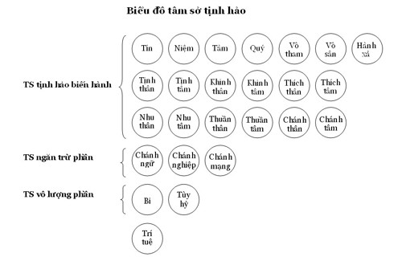
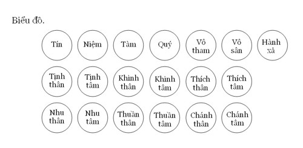

[01]
NHỮNG CHỮ VIẾT TẮT
Theo mẫu tự Pāli
|
Atts. |
Atthasālinī (Chú giải bộ Pháp Tụ) |
|
A. |
Aṅguttara Nikāya (Tăng Chi bộ) |
|
Ja. |
Jākata – atthakathā (Chú giải kinh Bổn sanh) |
|
Thera. |
Theragathā (Trưởng lão tăng kệ) |
|
Therī. |
Therīgāthā (Trưởng lão ni kệ) |
|
Dhp. |
Dhammapāda (kinh Pháp cú) |
|
Dhs. |
Dhammasaṅginī (Pháp tụ) |
|
DhpA. |
Dhammapāda – atthakathā (chú giải kinh Pháp cú) |
|
D. |
Dīgha Nikāya (Kinh Trường bộ) |
|
DA. |
Dīgha Nikāya – atthakathā (chú giải Trường bộ kinh) |
|
Ps. |
Paṭisambhidāmagga (Vô ngại giải đạo) |
|
PvA. |
Petavatthu- atthakathā (chú giải ngạ quỷ sự) |
|
Miln. |
Milindapañhā (Mi-Tiên vấn đáp) |
|
Vsm. |
Visuddhimagga (Thanh Tịnh đạo) |
|
Sn. |
Sutta nipāta (kinh Tập) |
|
SnA. |
Chú giải kinh Tập |
|
S. |
Saṃyutta Nikāya (Kinh Tương ưng bộ) |
|
M. |
Majjhima Nikāya (Kinh Trung bộ) |
|
MA. |
Majjhima Nikāya – atthakathā (chú giải Trung bộ kinh) |
-ooOoo-
Phần III
TÂM SỞ TỊNH HẢO VẤN ĐÁP.
(Sobhanacetasikā pucchakā).

1.
Hỏi:
Vì sao gọi là tâm sở Tịnh hảo? Có bao nhiêu tâm sở thuộc nhóm Tịnh
hảo?
Đáp:
Chữ sobhana nghĩa là chói sáng, rực rỡ. Những tâm sở nào làm tâm trở
nên chói sáng rực rỡ, đưa đến tiến hóa, tâm sở ấy gọi là tịnh hảo
(sobhana).
Sở dĩ gọi là
sobhana
vì những tâm sở này liên kết với ba căn thiện (mūlakusala) là vô tham,
vô sân, vô si.
"Tīṇimāni, bhikkhave, kusalamūlāni. Katamāni tīṇi? Alobho kusalamūlaṃ;
adoso kusalamūlaṃ; amoho kusalamūlaṃ.
"Này các Tỳ khưu! Có ba căn bản của thiện. Thế nào là ba? Không tham
(alobha) là căn bản của thiện; không sân (adosa) là căn bản của thiện;
không si (amoha) là căn bản của thiện...".
[1]
Thế nào là thiện?
Theo Atthasālinī (sớ giải
Bộ Pháp tụ), Ngài Buddhaghosa (Giác Âm) có giải thích
[2]
:
"Kusalanti
kucchitānaṃ salanādīhi atthehi
kusalaṃ:
Gọi là thiện, khi xuất hiện nó diệt trừ những điều tội lỗi (ādīna),
xấu xa (kucchitā), đó là ý nghĩa (của) thiện.
Apica ārogyaṭṭhena anavajjaṭṭhena kosallasambhūtaṭṭhena ca kusalaṃ:
"Và thiện còn có những ý nghĩa khác là: Không có bịnh (ārogya), không
có tội lỗi (anavajja), khởi lên khôn khéo (kosallasambhūta)".
Phụ Sớ giải (Ṭīkā) giải thích: Thiện có 5 nghĩa là :
1- Không bịnh (ārogya).
2- Tốt đẹp (sundarattha).
3- Khôn khéo (chaka).
4- Không tội lỗi (anavajja).
5- Có quả an vui (sukhavipāka).
Giải:
a-
"Không
bịnh".
Ở đây chỉ cho "tâm lành mạnh", là tâm không bị tha hóa bởi những ô
nhiễm từ bên ngoài vào. Ý nghĩa "không bịnh" hàm ý
"hoàn hảo".
Ý nghĩa khác của "không bịnh" là những tâm sở này có thể dẫn đến
Nípbàn (aroga là tên gọi khác của Nípbàn). Như Phật ngôn:
"Ārogya paramā lābhā
Không bịnh là lợi tối thượng"
[3]
.
b- "Tốt
đẹp".
Vì phá hủy những điều ác xấu, thực hiện tích cực những việc lành như:
bố thí, trì giới, tu thiền ...
c- "Khôn
khéo":
Tâm sở Tịnh hảo biết lách tránh những cạm bẩy dẫn đến thối đọa, như vị
tỳkhưu thấy nguy hại của các trần cảnh (sắc, thinh, hương, vị, xúc,
pháp) đáng hài lòng nên có tâm nhàm chán dục lạc, nhờ đó vị ấy tinh
cần tu tập có thể chứng đạt thiền định hay Nípbàn.
Hoặc khi nhận cảnh không tốt đẹp, biết giữ tâm không cho rơi vào "khó
chịu", đồng thời nương vào đối tượng (ārammaṇa - cảnh) không tốt đẹp
ấy để đạt được những thành tựu tốt đẹp, như vị Tỳ khưu quán tử thi,
quán thể trược ... chứng đạt Sơ thiền, phát triển tuệ quán thành tựu
Đạo - Quả siêu thế, do đó gọi là khôn khéo.
Chữ Kosalla được Ngài
Buddhaghosa giải thích: "Kosallaṃ vuccati paññā:
Trí tuệ gọi là khôn khéo".
Ý nghĩa "khôn khéo " ở đây chỉ cho những tâm thiện hòa hợp với trí.
Những tâm thiện ly trí không có được ý nghĩa này.
d- "Không
tội lỗi".
Khi có ba căn bản thiện
phối hợp, tuy hành động về thân hay ngữ, tuy bề ngoài có vẽ không tốt
đẹp nhưng không mang tội lỗi.
Như Trưởng lão
Piliṇḍavaccha, vị trưởng lão được Đức thế Tôn ban cho địa vị "đệ nhất
được chư thiên ái kính"
[4]
, thế mà Ngài thường gọi các bậc đồng phạm hạnh là "đồ bần tiện".
Chư tỳ-khưu than phiền đến Đức Thế Tôn, Đức Phật giải thích "đó là
thói quen của ngôn ngữ do tập khí quá khứ, vì Ngài trải qua 500 kiếp
là Bàlamôn, quen gọi những nô lệ là "đồ bần tiện", hiện tại Ngài đã
chứng quả A-la-hán không còn kiêu mạn trong tâm, nhưng chưa trừ bỏ
được tập khí trong quá khứ, tâm Ngài không có ý khinh miệt các bậc
đồng phạm hạnh".
Hay bà tín nữ Dự lưu sắp xếp cung tên cho chồng đi săn bắn, chư tỳ
khưu thắc mắc: "Vị Thánh nữ Dự lưu sao còn có ý sát sanh?". Đức Phật
giải thích "bà chỉ làm phận sự người vợ, chứ không có ý sát hại chúng
sanh khác. Ví như cầm thuốc độc nhưng tay không vết trầy thì vô sự".
Rồi Ngài dạy kệ ngôn:
"Pāṇimhi ce vaṇo n’ āssa. Hareyya pāṇinā visaṃ.
Nābbaṇaṃ visaṃ anveti. Natthi pāpaṃ akubbato.
"Bàn tay không thương tích. Có thể cầm thuốc độc.
Không thương tích, tránh độc. Không làm, không có ác."
[5]
Hay như Ngài Cakkhupāla
(vị Alahán bị mù), đi kinh hành dẫm đạp chết các côn trùng
[6]
...
e- "Cho
quả an lạc".
Điều này dễ hiểu và quả an lạc cao nhất là Nípbàn. Như Phật ngôn:
Nibbānaṃ paramaṃ sukhaṃ:
Nípbàn là cực lạc"
[7]
.
Đối với pháp hữu vi, lạc cao nhất là lạc tứ thiền (hay ngũ thiền theo
thiền năm bậc).
Có thắc mắc rằng: Những tâm sở này vì sao không gọi là những tâm sở
thiện (kusalacetasikā) lại gọi là tâm sở tịnh hảo (sobhana cetasika)?.
Vì rằng: Những tâm sở này cũng có mặt trong tâm quả (vipākacitta) hay
tâm vô ký (kriyācitta).
Khi tâm quả có tâm sở tịnh hảo phối hợp, loại tâm quả này "chói sáng",
như tâm quả tịnh hảo Dục giới cho tái sanh làm người hay chư thiên Dục
giới, tâm quả Sắc giới hay tâm quả Vô sắc giới cho sanh về các cõi
thiền tương ứng, tâm quả Siêu thế thành tựu "chấm dứt luân hồi" theo
từng bậc.
Khi tâm Hạnh (kriyācitta) có tâm sở Tịnh hảo hợp, đó là loại tâm của
vị thánh Ala hán, sự chói sáng của tâm này là hiển nhiên, không có gì
phải bàn cãi.
Lại có câu hỏi rằng: Những
tâm sở Tợ tha khi đi chung với tâm sở Tịnh hảo có "chói
sáng"
không?
- Có, tuy bản chất thật của tâm sở Tợ tha không thể chói sáng, nhưng
nương vào năng lực của tâm sở Tịnh hảo chúng chói sáng. Ví như đi
chung với Đức vua, người hầu cũng sang trọng, hay đi chung với người
thiện tuy không thiện cũng được mang tiếng "lành".
Rõ ràng hơn là: Tầm (vitakka), tứ (vicāra), hỷ (pīti) lạc
(sukhavedanā), và nhất hành (ekaggatā); thông thường chúng chỉ là
những tâm sở Tợ tha, nhưng khi có niệm (sati), tín, vô tham, vô sân...
(chủ yếu là niệm), chúng trở nên "chói sáng" và trở thành chi thiền.
Nhóm tâm sở Tịnh hảo gồm 25 tâm sở, chia làm bốn nhóm như sau:
- Nhóm tâm sở Tịnh hảo biến hành (sobhanasādharaṇā): Gồm 19 tâm sở.
- Nhóm tâm sở Ngăn trừ (virati): Gồm 3 tâm sở.
- Nhóm tâm sở Vô lượng (appamaññaya): Gồm 2 tâm sở.
- Và trí tuệ.
2- Hỏi:
Bốn đặc tính của kusala (thiện) ra sao?
Đáp:
Sách Atthasālinī (Sớ giải bộ Pháp Tụ) có nêu lên bốn đặc tính của
kusala (thiện) là:
-
Trạng thái
(lakkhaṇa):
Không có tội lỗi, cho quả an lạc (anavajjasukhavipāka- lakkhaṇā).
Hoặc là :"Chống lại tội lỗi hay không có lỗi (avajjapaṭipakkhattā vā
anavajjalakkhaṇā).
-
Phận sự
(rasa): Phá hủy bất thiện (akusalaviddhaṃsanarasaṃ).
-
Thành tựu
(paccupaṭṭhāna):
Trong sạch hóa tâm (vodānapaccupaṭṭhānaṃ).
Hoặc là:
"Iṭṭhavipākapaccupaṭṭhānaṃ:
Có quả (đáng) vui thích."
-
Nhân gần
(padaṭṭhāna): Khởi sanh tác ý đúng (yoni so manasikāra paccupaṭṭhāṇaṃ)
(sđd).
Giải:
1.-"Không
có tội lỗi".
Là khi tâm thiện sinh lên thực hiện những điều tốt đẹp do kết hợp với
vô tham, vô sân hay vô si. Tâm thiện không tạo ra những ác - bất thiện
nghiệp nơi thân - ngữ - ý.
"Cho quả an vui".
Là những an lạc, hạnh phúc.
Quả an lạc này rất đa dạng như: "Cho tái sinh về cõi người, cõi chư
thiên hay phạm thiên", hoặc những an lạc bên ngoải như "đầy đủ tài
sản, danh vọng..", quả an lạc bên trong như "sát trừ phiền não, thành
tựu những thắng trí như thiên nhãn thông..."
2- "Phá
hủy bất thiện".
Là đẩy lui những bất thiện pháp đang có, đồng thời những bất thiện
pháp chưa sinh không sinh lên.
Khi tâm thiện được tu tập làm cho sung mãn, thì diệt trừ mọi phiền
não, chấm dứt mọi ô nhiễm. Như Phật ngôn:
"Nāhaṃ, bhikkhave, aññaṃ ekadhammampi samanupassāmi yaṃ evaṃ bhāvitaṃ
bahulīkataṃ mahato anatthāya saṃvattati yathayidaṃ, bhikkhave, cittaṃ.
Cittaṃ, bhikkhave, bhāvitaṃ bahulīkataṃ mahato atthāya saṃvattatī'ti.
"Ta không thấy một pháp nào khác, này các tỳkhưu, khi tu tập đưa đến
nhiều lợi ích lớn, này các tỳkhưu, như tâm.
Này các tỳkhưu, tâm được tu tập, được làm cho sung mãn, đưa đến nhiều
lợi ích lớn"
[8]
.
3-
"Trong sạch hóa tâm".
Là loại trừ những pháp làm tâm nhơ bẩn để tâm được trong sạch, tâm đã
trong sạch thì càng trong sạch hơn. Như Phật ngôn:
"Pabhssaranamidaṃ, bhikkhave, cittaṃ. Tañca kho āgantukehi
upakkilesehi vippamuttaṅti,
"Tâm này, này các tỳkhưu, là sáng chói. Và tâm này được gột sạch các
cấu uế từ ngoài vào"
[9]
.
4-
"Khởi sanh tác ý đúng".
Là sự hướng tâm một cách đúng đắn, như khi nhận biết cảnh tốt đẹp thì
hướng tâm ra khỏi tham ái, khi gặp cảnh xấu thì hướng tâm ra khỏi khó
chịu...
3-
HỎI:
Hãy kể tên 19 tâm sở Tịnh hảo biến hành và nói ý nghĩa "biến hành"
(sādhāraṇā) của chúng.
ĐÁP:
Pāli có ghi nhận: Mười chín (19) tâm sở tịnh hảo biến hành như sau:
Saddhā, sati, hiri, ottappaṃ, alobho, adoso, tatramajjhettatā,
kāyapassadhi, cittapassadhi, kāyalahutā, cittalahutā, kāyamudutā,
cittamudutā,
kāyakammaññatā, cittakamaññatā, kāyapāguññatā, cittapāguññatā,
kāyujjukatā, cittujjukatā.
Ceti ekūnavisatime cetasikā sobhanasādhāraṇā nāma.
"Tín, niệm, tàm, quý, vô tham, vô sân, trung tính
[10]
,
tịnh thân, tịnh tâm, khinh thân, khinh tâm, thích thân, thích tâm,
nhu thân, nhu tâm, thuần thân, thuần tâm, chánh thân, chánh tâm.
Như vậy, 19 tâm sở này gọi là biến hành Tịnh quang tâm sở".
[11]
Gọi là tâm sở tịnh hảo Biến hành (sādhāraṇā) vì 19 tâm sở này đều có
mặt trong 59 (hay 91) tâm tịnh hảo.
59 tâm là: 24 tâm Dục giới tịnh hảo+ 27 tâm đáo đại + 8 tâm siêu thế
(tính hẹp).
91 tâm là: 24 tâm Dục giới tịnh hảo+ 27 tâm đáo đại (mahaggatācitta) +
40 tâm siêu thế (tính rộng).

*
A- TÂM SỞ
TỊNH HẢO BIẾN HÀNH.
(Sobhanasāradhāṇā).
1- Tâm sở Tín (sadhācetasika).
4.
HỎI:
Thế nào là tâm sở Tín (saddhācetasika)?
ĐÁP:
Saddhā từ = ngữ căn saṃ (tốt, khéo) + căn dah (thiết lập, đặt xuống,
đè xuống).
Theo nghĩa ban sơ (nguyên
ngữ) saddhā là "đặt
xuống (nơi) tốt đẹp"
hay "thiết
lập sự tốt đẹp".
*- "Đặt xuống nơi tốt đẹp". Saddhā là niềm tin được đặt vào
nhân vật hay điều (vatthu) nào đó mà nó cho là tốt đẹp. Nơi ấy,
diều ấy có thật sự là "tốt đẹp" không lại là việc khác.
Như đứa bé tin tưởng vào cha mẹ, thầy cô của chúng, đối với chúng
những người này là "tuyệt vời", hoặc chúng tin có "ông tiên, bà tiên
hiền lành" trong những câu truyện thần tiên diễm ảo của tuổi thơ.
*- "Thiết
lập sự tốt đẹp".
Saddhā (tín) là nền tảng ban đầu của các thiện pháp, hay những điều
tốt đẹp.
Chính do ý nghĩa
"thiết lập sự tốt đẹp"
này, nên Luận sư Anuruddha nêu saddhā (tín) trước tiên trong 25 tâm sở
tịnh hảo.
Theo nghĩa bóng, saddhā
(tín) thường được hiểu là "sự
tín nhiệm, sự tin tưởng, sự tin cậy".
Bộ Pháp Tụ (Dhammasaṅgani) trong tạng Thắng pháp (abhidhamma) có định
nghĩa:
"Katamaṃ tasmiṃ samaye saddhindriyaṃ hoti?
Thế nào là tín quyền (saddhidriya) trong khi ấy?
"Yā tasmiṃ samaye saddhā saddahanā okappanā abhippasādo saddhā
saddhindriyaṃ saddhābalaṃ. Idaṃ tasmiṃ samaye saddhindriyaṃ hoti.
Trong khi ấy, có pháp là sự tin tưởng, sự tin cậy, sự tín nhiệm, sự
tịnh tín, tín là tín quyền, tín lực. Đây là tín quyền trong khi ấy
[12]
.
Ngài Buddhaghosa trong sáchAtthasālinī có giải thích
[13]
:
*-Buddhādiguṇānaṃ
saddahanavasena
saddhā:
Tin tưởng vào những ân đức, đứng đầu (ādi) là ân đức Phật, đó là
saddhā (đức tin)".
*- Buddhādīni vā ratanani
saddahati pattiyāyatīti
saddhā:
Tin tưởng và đạt được (pattiyā) từ Đức Phật hay các (ân đức) quý báu
khác, gọi là đức tin (saddhā)
[14]
.
*-
Saddahanāti
saddahanākāro:
Sự tin cậy
là làm cho (được) tin tưởng.
*- Buddhādīnaṃ guṇe
ogāhati, bhinditvā viya anupavissatīti
okappanā:
Chìm vào những ân đức như ân đức Phật, ví như sự trầm tư để tìm cách
phá vỡ (chướng ngại), gọi là okappanā
(sự
tín nhiệm)
[15]
.
*-Buddhādīnaṃ guṇesu etāya
sattā ativiya pasīdanti, sayaṃ vā abhippasīdatīti
abhippasādo:
Chúng sinh có được sự xác tín nơi các ân đức, đứng đầu là ân đức Phật,
hay có được sự xác tín cao tột nơi các ân đức khác, gọi là "sự tịnh
tín (abhippasādo)"
[16]
.
Ngoài ý nghĩa "niềm tin" ra, saddhā còn mang ý nghĩa là "sự tự tin".
Trong Milindapañhā, Đức Nāgasena có trả lời vua Milinda rằng:
- Tâu Đại Vương, đức tin có hai tướng (lakkhaṇa) là:
*-Trong sạch hóa đối tượng (sampasādana).
*- Tư cách tiến tới
(sampakkhaṃdāna)
[17]
.
a-Trong sạch hóa đối tượng (sampasādana).
Khi có niềm tin với đối tượng nào, saddhā sẽ làm đối tượng ấy trở nên
trong sạch đối với tâm.
Như những tín đồ Phật giáo có tâm trong sạch với Tam Bảo, những tín đồ
ngoại giáo có tâm trong sạch với những vị giáo chủ của mình hay tin
tưởng vào giáo thuyết ấy...
Sách Atthasālinī có nêu ra
ví dụ: Ví như viên bảo ngọc của vua Chuyển Luân Vương
[18]
có đặc tính làm trong sạch nước vẩn đục.
Khi vua Chuyển Luân cùng đoàn quân băng qua dòng suối làm bẩn đục
nước, Đức vua lại cần dùng nước, Ngài bỏ viên bảo ngọc vào nước, nước
trở nên trong sạch.
Cũng vậy, đức tin làm tâm không (hay chưa) trong sạch với đối tượng sẽ
trở nên trong sạch với đối tượng.
Thực tế cho thấy rằng: "Khi có niềm tin với người nào rồi, tâm luôn có
sự trong sạch với đối tượng ấy". Đối tượng ấy có thật sự trong sạch
hay không lại là vấn đề khác.
Như người nông dân tình cờ nhặt viên sỏi óng ánh, anh "tin rằng" đó là
vật báu, anh sẽ trân trọng viên sỏi ấy vô cùng (còn đó có phải là "vật
báu" hay không, lại là việc khác).
b-
Tư cách tiến tới.
Sách Milindapañhā (vua Milinda hỏi) có nêu ra ví dụ: Ví như có dòng
nước xoáy sâu, một số người đứng bên bờ này đang e ngại không dám lội
qua.
Có người khỏe mạnh, can đảm lội xuống qua bờ an toàn, thấy thế đoàn
người cùng nhau lội qua dòng nước.
Đoàn người lội theo sau ví
như
"sự tiến tới của đức tin",
đồng thời hàm ý "có sự tư tin", vì rằng: Cho dù thấy người khác vượt
sông an toàn, nếu không "tự
tin"
rằng: Mình chế ngự được nguy hiểm, thì cũng không dám vượt qua.
Có một số người trong thế gian, khi thấy khó khăn nguy hiểm thì thoái
chí, ngả lòng, một số hành giả khi thực tập thiền tịnh, gặp phải những
chướng ngại (nīvaraṇa) cũng nản chí bỏ cuộc.
Đó là do "thiếu tự tin", hay không có sức mạnh của đức tin (saddhābala
– tín lực).
Đức Phật có dạy:
"Katamo ca, bhikkhave, puggalo āsaṃso?
Này các tỳkhưu, thế nào là người hy vọng?
Idha, bhikkhave, bhikkhu sīlavā hoti kalyāṇadhammo.
Này các tỳkhưu! Ở đây, một tỳkhưu giữ giới, tính tình hiền thiện.
So suṇāti āsavānaṃ khayā anāsavaṃ cetovimuttiṃ paññāvimuttiṃ diṭṭhevā
dhamme sayaṃ abhiññā sacchikatvā upasampajja viharatī’ti.
Vị ấy nghe: "Tỳkhưu có tên như vậy, đã đoạn tận các lậu hoặc trong
hiện tại, tự mình với thắng trí, chứng ngộ, chứng đạt và an trú vô lậu
tâm, trí tuệ giải thoát".
Tassa evaṃ hoti-‘kudassū nāmā ahampi āsavānaṃ khāya anāsavaṃ
cetovimuttiṃ paññāvimuttiṃ diṭṭhevā dhamme sayaṃ abhiññā sacchikatvā
upasampajja viharissāmī’ti!
Người ấy suy nghĩ như sau: "Đến khi nào, do đoạn tận các lậu
hoặc ngay trong hiện tại, tự mình với thắng trí, ta sẽ chứng ngộ,
chứng đạt và an trú vô lậu tâm giải thoát, tuệ giải thoát"..
Ayaṃ vuccati, bhikkhave, puggalo nirāso.
Người như vậy được gọi là người có hy vọng
[19]
.
Lại nữa, Đức Phật có trả lời câu hỏi của Dạ xoa Ālavaka như sau:
Dạ xoa Ālavaka:
"Kathaṃ su tarati oghaṃ, kathaṃ su tarati aṇṇavaṃ;
Kathaṃ su dukkhamacceti, kathaṃ su parisujjhati".
Thế nào vượt bộc lưu? Thế nào vượt biển lớn?
Thế nào vượt qua khổ (acceti)? Thế nào thật thanh tịnh?
Đức Thế Tôn:
"Saddhā tarati oghaṃ, appamādena anṇṇavaṃ;
Vīriyena dukkhamacceti, paññāya parisujjhati".
Với tín, vượt bộc lưu; không phóng dật, vượt
biển!
Tinh tấn vượt đau khổ; với tuệ thật thanh tịnh.
[20]
Hai đoạn kinh trên nêu rõ "tư cách tiến tới" của đức tin, nhất là kệ
ngôn "với tín vượt bộc lưu".
Một cách giải tự khác của saddhā là : Saṃ + căn dhā; căn dhā là "nắm
giữ, bám lấy". Như vậy, "tín là bám lấy điều tốt", "gìn giữ điều tốt".
5-
HỎI:
Có mấy loại niềm tin?
ĐÁP:
Khi phân theo người, tổng quát có hai là : Thánh tín và phàm tín.
Khi phân theo đối tượng (cảnh), nói gọn cũng có hai là.
- Niềm tin đúng, gọi là chánh tín (sammāsaddhā).
- Niềm tin sai, gọi là tà tín (micchāsaddhā).
Thánh tín.
Là đức tin của bậc Thánh, niềm tin này bất động không bị thay đổi bất
kỳ do ai, cho dù đó là chư thiên, Phạm thiên, Samôn hay Bàlamôn nào
tác động đến.
Như Ngài Suppabuddha (Thiện giác), do tiền nghiệp nhổ nước bọt vào
người vị Phật Độc giác, nên kiếp này mang bịnh cùi.
Khi nghe Đức Thế Tôn thuyết về pháp vô thường, Ngài chứng quả Dự lưu.
Ma vương muốn thử xem Ngài Suppabuddha còn nằm trong quyền lực của y
hay không, Ma vương hóa thân thành Đức Thế Tôn đi đến nhà của
Suppabuddha, nói rằng:
"Này Suppabuddha, các pháp hữu vi có khi vô thường có khi thường.
Nhưng Ngài Suppabuddha hiểu rằng "đây là ác ma giả dạng".
[21]
Phàm tín.
Là đức tin của phàm nhân, đức tin này chưa vững chắc, còn lay động do
chưa chứng đạt Nípbàn, nên có thể bị thay đổi.
Thánh tín chỉ có một loại là: Chánh tín, vì thấy rõ các pháp hữu vi có
ba tướng vô thường, khổ, vô ngã như lời dạy của Đấng Đạo Sư.
Phàm tín có hai loại: Chánh tín và tà tín.
Chánh tín của phàm nhân do nghe và thấy được tam tướng của pháp hữu vi
(ám chỉ hành vipassanā (thiền quán), nhưng chưa chứng ngộ Nípbàn, phàm
nhân khi đạt được hành xả tuệ (saṅkhārupekkhāñāṇa) xem như thành tựu
chánh tín cao nhất trong thời thường nhựt.
Nếu tính theo thời sátna (khaṇakāla) thì ở sátna thuận thứ (anuloma)
của lộ đắc Sơ đạo, là đỉnh cao nhất chánh tín của phàm nhân. Vì sau
hai sátna kế tiếp sátna Thuận thứ (sátna Gotrabhū - Chuyển tánh- và
sátna Đạo (magga)), vị ấy trở thành bậc Thánh.
a- Chánh tín của phàm nhân thường tình.
Đó là niềm tin đặt vào thiện pháp, hoặc đặt vào đối tượng hoàn toàn
trong sạch. Các Sớ giải sư có giải: Chánh tín theo cách này có bốn chi
phần là:
1.
Tin nghiệp (kammassaddhā).
2.
Tin quả của nghiệp (vipākasaddhā).
3.
Tin vào nghiệp báo (kammassasakatā saddhā).
4.
Tin vào tuệ giác của Đức Phật (tathāgatabodhisaddhā)
[22]
.
a’-Thế nào là tin nghiệp?
Kamma ban đầu chỉ có ý nghĩa là "việc làm, hành động", về sau kamma
mang ý nghĩa là "các pháp vận chuyển hay pháp hành".
Ngoài ra kamma là tên gọi khác của pháp hành (saṅkhāradhamma), như
Vô minh duyên hành, chi pháp của hành là tâm sở Tư
(cetanācetasika) và hành ở đây chỉ cho nghiệp (kamma).
Tin vào nghiệp
(kamma) là tin vào sự vận chuyển của pháp. Chúng sanh xuất hiện trong
thế gian này cũng do sự vận chuyển của pháp, không do Đấng Tạo hóa
sinh ra cũng không phải ngẫu nhiên có, sự hiện khởi của chúng sanh
trong thế gian chính là do nghiệp tạo thành". Như Đức Phật dạy:
"Kammassakā māṇava, sattā kammadāyādā kammayonī kammabandhū
kammappaṭisaraṇā.
"Này thanh niên
[23]
, các hữu tình là chủ nhân của nghiệp, là thừa tự của nghiệp, nghiệp
là thai tạng, nghiệp là quyến thuộc, nghiệp là điểm tựa.
Kammaṃ satte vibhajati yadidaṃ hīnappaṇītatāyāti".
Nghiệp phân chia các loại hữu tình, nghĩa là có liệt, có ưu."
[24]
Như vậy: Tin vào nghiệp là:
-
Tin rằng: Do pháp hành vận
chuyển nên tạo tác ra mọi vật, không do Thượng đế tạo, cũng không phải
ngẫu nhiên có.
-
Tin rằng: Sự vận chuyển của
pháp luôn thay đổi, nên chúng có trạng thái vô thường, biến hoại, sinh
diệt liên tục.
-
Tin rằng:
Chúng sinh sai biệt, có tốt có xấu... là do nghiệp tạo thành.
Như một phàm nhân, nhờ tinh cần tu tập, chứng đắc Thánh quả,
trở thành bậc Thánh. Kết quả này là do có
"việc làm
(kamma)" theo đường lối tốt đẹp (là thực hành đúng pháp).
Chúng sinh rơi vào khổ cảnh do sự vận chuyển của pháp ác xấu,
chúng sinh sinh vào nhàn cảnh là do "sự vận chuyển của pháp tốt"...
chẳng phải do Thượng đế ban thưởng cũng không do Thượng đế hình phạt.
Chính chúng sinh ấy tự lựa chọn rồi thực hành.
Đức Phật có dạy cho du sĩ Vacchagotta rằng:
"Iti kho so Vaccha ekanavuto kappo yam-ahaṃ anussarāmi, nābhijānāmi
kañci ājīvakaṃ saggūpagaṃ aññatra ekena, so p’āsi kammavādī kiriyavādī
ti.
"Này Vaccha, dầu cho Ta nhớ đến 91 kiếp, Ta không biết một tà mạng
ngoại đạo nào đã sinh thiên, trừ một vị, và vị này thuyết về nghiệp
và thuyết về tác dụng của nghiệp"
[25]
.
Và "Attā hi attano nātho:
Nơi nương của ta chính là ta"[26]
b’- Thế nào là tin quả của nghiệp?.
Nghiệp (kammaṃ) là hành động.
Là tin rằng: "Khi pháp hành chuyển động sẽ tạo ra một kết quả, như
nước lay động tạo ra sóng nước, hai vật chạm nhau phát sinh âm thanh
như dùi trống và trống, hoặc phát sinh lửa như đá chạm mạnh vào
đá...".
"Sóng nước, âm thanh, lửa..." là kết quả của mỗi "hành động" trên.
Ở lãnh vực tinh thần thì "hành động của ý" sẽ tạo ra tâm quả (ngoại
trừ tâm duy tác hữu nhân của vị Thánh Alahán). Như Phật ngôn:
"Manopubbaṅgamā dhammā; manoseṭṭhā manomayā.."
"Ý dẫn đầu các pháp; ý làm chủ, ý tạo..."
[27]
Dễ hiểu hơn, tin nghiệp và tin quả của nghiệp là "tin vào nhân quả".
c’- Thế nào là tin vào nghiệp báo?
Là tin rằng: "Một khi tạo nghiệp bất thiện chính ta sẽ nhận kết quả
đau khổ, khi tạo nghiệp thiện chính ta nhận được hạnh phúc từ việc
lành ấy".
Ai tạo nghiệp? Chính ta tạo nghiệp; chính xác hơn là tâm sở Tư
(cetanācetasika).
Ai hưởng quả? Cũng chính ta hưởng quả; chính xác hơn là tâm sở thọ
(vedanācetasika).
Hạnh phúc hay đau khổ chính ta tạo ra và chính ta là người nhận lãnh
hạnh phúc hay đau khổ ấy; hạnh phúc hay đau khổ không do Thượng Đế hay
đấng Tạo hóa nào ban tặng hoặc trừng phạt.
Bao giờ còn thân năm uẩn, bấy giờ những gì ta tạo ra từ quá khứ hay
trong hiện tại, ta sẽ nhận lại kết quả từ chúng. Đó là "nghiệp báo".
Nói cách khác, "nhân quả bao trùm nghiệp báo". Khi tạo nhân sẽ cho kết
quả, ta không nhận lại kết quả ấy, thì đó chỉ là nhân quả; còn khi
nhận lại kết quả thì đó là nhân quả lẫn nghiệp báo.
Như Đức Phật thuyết pháp (là nhân), người nghe chứng quả Thánh (là
quả), đây chỉ là nhân quả.
Người tạo ác nghiệp về thân sẽ nhận ác quả nơi khổ cảnh. Đó là nhân
quả lẫn nghiệp báo.
Có câu hỏi rằng: "Phàm nhân có khi nào chỉ có nhân quả mà không có
nghiệp báo chăng?".
- Vẫn có, như trường hợp
người đao phủ giết tội nhân suốt 55 năm
[28]
, với nghiệp quả này y phải nhận đau khổ trong cảnh giới địa ngục.
Nhưng vào lúc cuối đời được nghe Pháp từ Ngài XálợiPhất (Sāriputta), y
chứng quả Dự Lưu, sau đó người đao phủ này tiển đưa Đức Xálợiphất ra
về, trên đường trở về nhà Ngài bị bò húc chết, sinh về cõi trời, thế
là khổ cảnh trong địa ngục không có cho Ngài. Đây là trường hợp có
nhân quả nhưng không có nghiệp báo.
Lại nữa, có câu hỏi: "Vị Thánh Alahán có còn nghiệp báo
chăng?".
Đáp rằng: Bao giờ còn thân năm uẩn bấy giờ còn nghiệp báo.
Như Đức Phật bị nhức đầu do quá khứ hoan hỷ với việc làm ác
của thân quyến khi họ thuốc cá trong hồ. Đức Mụckiềnliên (Moggallaana)
bị đánh tan xác để rồi sau đó Ngài viên tịch, do ác nghiệp trong tiền
kiếp đánh cha mẹ ...
Sau khi viên tịch, vị Thánh Alahán không còn tái sinh, xem
như diệt trừ mọi nghiệp báo.
d’-Thế nào là tin vào tuệ giác của Đức Phật?
Là tin rằng: "Đức Phật là bậc hoàn toàn trong sạch, có trí tuệ thông
suốt tất cả pháp".
Chánh tín hàm ý là "niềm tin có trí tuệ ", "niềm tin có sự suy xét" và
"niềm tin được kiểm chứng".
Nếu như niềm tin không có trí, chỉ là niềm tin suông, hoặc niềm tin có
trí nhưng không kiểm chứng thì cũng chưa gọi là chánh tín hoàn thiện,
tuy loại niềm này tốt hơn so với niềm tin không có trí.
Vì rằng: Trí có ba loại là trí văn, trí tư và trí tu.
Chính trí tu (trí được kiểm chứng) làm hoàn thiện chánh tín.
Du sĩ Pilotika tán thán Đức Phật qua ví dụ hình ảnh bốn dấu chân voi
là:
- Giai cấp Bàlamôn có trí tán thán Đức Phật.
- Giai cấp Sátđếlỵ có trí tán thán Đức Phật.
- Giai cấp gia chủ có trí tán thán Đức Phật.
- Giai cấp Samôn (bậc xuất gia) có trí tán thán Đức Phật.
Từ những điều này du sĩ Pilotika đặt niềm tin vào Đức Thế Tôn, vì nhận
thấy các bậc có trí thuộc bốn giai cấp trên đều tán thán Đức Phật.
Tuy không bác bỏ, nhưng Đức Thế Tôn không tán thán loại niềm tin này,
vì loại niềm tin này có khi đúng có khi sai.
Ở đây, vì du sĩ Pilotika đặt niềm tin vào Đức Phật, Đức Phật là đối
tượng hoàn toàn trong sạch, nên không có gì bàn cải.
Nhưng nếu đối tượng không phải là Đức Phật thì sao? Như trước khi Đức
Phật xuất hiện bốn giai cấp này cũng tán thán các giáo chủ ngoại giáo
như Makkhali Gosala, Puraṇa Kassapa, Nigantha Natāputta ... nếu du sĩ
Pilotika thấy đại chúng tôn sùng những vị Giáo chủ ấy, y cũng tôn sùng
theo thì đúng hay sai? Câu trả lời hẳn phải là: "Đó là tà tín".
Và trong bản kinh Đức Thế Tôn chỉnh đốn lại "niềm tin" cho Bàlamôn
Jānussoṇi.
Đức Thế Tôn dạy đại ý như
sau:
"Như người săn voi thiện xảo, tuy thấy được dấu chân voi to lớn, thấy
được những vật cao bị ngà voi cắt đứt, nhưng chưa vội kết luận là con
voi to lớn, cho đến khi nào thực sự trông thấy con voi".
Đức Thế Tôn nêu ra bốn vết cắt của con voi lớn là:
- Vị nghe pháp của Đức Thế Tôn, chứng đạt tứ thiền, đây là vết chém
thứ nhất của con voi, nhưng chưa thấy được con voi lớn. Vị ấy chưa vội
kết luận "con voi này là con voi lớn".
- Vị chứng đạt Túc mạng trí, là vết chém thứ hai của con voi, nhưng
chưa thấy được con voi lớn. Vị ấy chưa vội kết luận "con voi này là
con voi lớn".
- Vị chứng đạt được Sinh tử trí, thấy được sự sống chết chúng sinh tùy
theo nghiệp là vết chém thứ ba của con voi, nhưng chưa thấy được con
voi lớn.Vị ấy chưa vội kết luận "con voi này là con voi lớn".
- Vị chứng được Tứ Thánh đế, thành tựu Alahán quả là vết chém thứ tư
và thấy được con voi lớn
[29]
.
Vì sao? Vì
"ba vết chém"
đầu, các Samôn, Bàlamôn ngoài Phật giáo vẫn có thể có được, và thành
tựu "ba vết chém" này vẫn chưa giải thoát khỏi sinh tử luân hồi, vẫn
còn bị trói buộc. Voi còn bị trói buộc, chưa phá được gông xiềng thì
chưa phải là con voi lớn.
Chỉ có "vết chém" thứ tư, thoát khỏi sinh tử luân hồi, không còn bị
trói buộc. Đấy mới thật sự là con voi lớn. Và điều này chỉ có trong
Phật giáo.
Bài kinh trên cho chúng ta thấy "niềm tin cần phải có trí chứng nghiệm
mới xác tín được, khi có xác tín bấy giờ mới thật là "chánh tin hoàn
hảo". Chánh tín có thấp có cao là như thế.
Chánh tín của bậc Thánh thì bất động, còn chánh tín của phàm nhân có
thể bị thay đổi.
b- Tà tín.
Tà tín là niềm tin sai lệch, có hai loại tà tín là: cuồng tín và mê
tín (muddhappa).
Cuồng tín:
Là "tin cực đoan" vào điều sai lầm hay nhân vật ác xấu (mà theo người
tà tín "đó là lý thuyết tốt đẹp", hay là "nhân vật tối thượng". Như
những môn đệ của các giáo chủ ngoại giáo Makkhali Gosala, hay như
Kokālika tin tưởng Devadatta (Đềbàđạtđa) ...
Cuồng tín là một dạng tà kiến cực đoan.
Mê tín
là tin sai lầm, có ba loại mê tín.
1’-
Tin vào điều hoàn toàn vô căn cứ.
Như tin có tự ngã, có đấng Sáng tạo, tin Thần táo, tin đốt giấy tiền
vàng mả giúp người thân ở âm phủ ...
Hay tin vào phương thức
thực hành khổ hạnh sái quấy như "hạnh con bò, hạnh con chó"
[30]
, nhờ đó được giải thoát.
Đây cũng là loại tà kiến,
gọi là giới cấm thủ
[31]
(sīlabbataparāmāsa).
Tin vào điều vô căn cứ này dựa vào truyền khẩu (lời đồn), như có vài
kẻ phao tin thất thiệt: "Tượng Phật này linh ứng, ngôi chùa nọ chiếu
hào quang... cốt để những người nhẹ dạ tìm đến cúng dường, sùng
bái..."
Hoặc một số đệ tử phao tin "thầy mình là Phật sống" (chẳng hiểu họ căn
cứ vào đâu để biết thầy mình đã đắc đạo, trở thành phật sống? Vì nếu
biết được như thế thì chính họ đã đắc đạo, đã là "phật sống").
Niềm tin vô căn cứ này được xếp vào tâm sở si (mohacetasika) hay tà
kiến (micchādiṭṭhi).
Có câu hỏi rằng:
Những Sa môn, Bàlamôn trước thời Đức Phật, tin có tự ngã, tin vào Phạm
thiên chủ là Đấng Sáng tạo thế gian. Vì sao những vị này vẫn chứng đắc
thiền, thắng trí (vì tà kiến là pháp bất thiện kia mà)?
Đáp rằng: Việc tin có tự ngã hay Phạm Thiên chủ là khác, khi thực hành
pháp thì tâm lại "tin vào căn bản thiện: vô tham, vô sân, vô si", tức
là "tin vào pháp (thiện)", do đó dẫn đến chứng đắc thiền cùng Thắng
trí.
Lại nữa, khi an trú trong ấn tướng của thiền chứng thì không có ý nghĩ
"ta" hay "của ta", nhưng khi xả thiền thì lại cho là "ta", "của ta".
Hai thời điểm khác nhau và hai loại tâm khác nhau, có thể nói "cảnh
thiền tướng làm duyên cho tà kiến sinh khởi, còn làm duyên cho cảnh
thiền tướng sinh khởi lại là pháp khác, không nên có sự nhầm lẫn trong
hai vấn đề này.
"... pathavito maññati pathavim-meti maññati, pathaviṃ abhinadati.."
"...
nghĩ đến (tự ngã) như là đất, nó nghĩ "đất là của ta", hoan hỷ trong
đất".
[32]
Đất ở đây chỉ cho ấn tướng
của đề mục
đất.
Và tin rằng "Ta là đất, Ta
có đất, đất có trong Ta, Ta có trong đất" thuộc về thân kiến, niềm tin
như thế này là tà tín, là tà kiến.
2’-
Tin vào điều lệch lạc.
Điều lệch lạc là điều không hẳn sai nhưng không hoàn toàn đúng. Như
một số Phật tử tin vào một tha lực có thể giúp họ thoát khổ.
Ở đây, "thần lực của Thiên nhân" là có thật, nhưng không phải do cúng
bái, cầu khẩn mà chư thiên giúp đỡ, chư thiên chỉ hộ trì khi họ tạo
thiện nghiệp.
Một người làm việc ác quấy, gây đau khổ cho người khác, người ấy cầu
khẩn chư thiên hộ trì cho y "tai qua nạn khỏi". Nếu chư thiên hộ trì
người này thì đó là "ác chư thiên" vì "hộ trì kẻ ác".
Và nếu là như thế thì "cả hai đều rơi vào khổ cảnh", vì ác nghiệp này
sẽ cho ác quả.
Đức Phật có dạy trưởng giả Cấpcôđộc (Anāthapiṇḍdika):
... " Na kho, gahapati, arahati ariyasāvako sukhakāmo sukhaṃ āyācituṃ
vā abhinandituṃ vā sukhassa vāpi hetu.
Sukhakāmena, gahapati, ariyasāvakena sukhasaṃvattanikā paṭipadā
paṭipajjitabbā...
...
" Này gia chủ, vị Thánh đệ tử muốn có an lạc, không thể do cầu xin an
lạc hay tán thán (an lạc) để làm nhân đem đến an lạc.
Này gia chủ, vị Thánh đệ tử muốn có an lạc cần phải thực hành con
đường dẫn đến an lạc..."
[33]
.
Vào thời Đức Phật, có quan niệm "làm lễ tế đàn, sau khi mệnh chung,
được sinh về PhạmThiên giới".
Chú của Trưởng lão
Sāriputta đã bỏ ra mỗi tháng 1000 đồng vàng, cúng dường các đạo sĩ lỏa
thể để được sinh về Phạm thiên giới
[34]
, đây là niềm tin sai.
Sinh về Phạm thiên giới là do chứng đắc định, không thể do lễ bái cúng
dường mà thành tựu được.
Một số Phật tử cũng có ý nghĩ tương tự, tức là "không thực hành giới -
định - tuệ", chỉ "bố thí, niệm phật" là được sinh về "cõi phật".
Dĩ nhiên, "bố thí, niệm phật" là tốt, nhưng không thể dẫn đến giải
thoát, nếu không thực hành pháp quán và "cõi Phật" có hay không? Lệch
lạc là đây, sai lầm là đây.
Đức tin trong trường hợp này là đức tin ly trí (ở khía cạnh đúng) và
mê tín (ở khía cạnh "tin sai").
Trong thời Đức Phật, có
những tế đàn của Bàlamôn, Đức Phật không bài bác
tất cả
tế đàn, Ngài xác nhận
"những tế đàn không có sát hại sinh vật là tế đàn tốt".
Tương tự, vào thời Đức Phật đa số sùng bái khổ hạnh và Đức Phật dạy
rằng:
"Idhāhaṃ kassapa ekaccan tapassiṃ lūkhājīviṃ passāmi, dibbena cakkhumā
visuddhena atikkanta-mānusakena...pe... kāyassa bhedā param maraṇā
apāyaṃ duggatiṃ vinipātaṃ nirayaṃ uppannaṃ".
"Này Kassapa! Với thiên nhãn thanh tịnh, siêu nhân, ta thấy một số
người tu khổ hạnh, sống khắc khổ... Sau khi thân hoại mệng chung phải
sanh vào ác thú, đọa xứ địa ngục.
"Idha panāhaṃ Kassapa ekaccaṃ tapassiṃ lūkhājīviṃ passāmi, dibbena
cakkhumā visuddhena atikkanta-mānusakena...pe... kāyassa bhedā param
maraṇā sugatiṃ saggaṃ lokaṃ uppannaṃ".
Này Kassapa! Với thiên nhãn thanh tịnh, siêu nhân, ta thấy một số
người tu khổ hạnh, sống khắc khổ.... Sau khi thân hoại mạng chung,
được sinh vào thế giới chư thiên"
[35]
.
Đoạn kinh trên cho thấy: "Tin vào sự khổ hạnh, có phần đúng, có phần
sai". Đúng hay sai là do cách thực hành đúng hay không đúng.
Sự thực hiện đúng là do có trí dẫn dắt, thực hiện sai là do không có
trí. Đức tin không có trí thường dẫn đến tà tín.
3’-
Điều thực có nhưng không tin.
Như Đức Thế Tôn dạy
Bàlamôn Bhāradvāja:
"Bhāradvāja, susaddahitaṃ yeva hoti, tañ ca hoti rittaṃ tucchaṃ musā.
No ce pi susaddahitaṃ hoti, tañ ca hoti bhūtaṃ tucchaṃ anaññathā.
-
Này Bhāradvāja, có điều được khéo tin tưởng, có thể là trống không,
trống rỗng, hư vọng. Trái lại, điều không được khéo tin tưởng, có thể
là thật, chân, không thay đổi"
[36]
.
Điều không thực có mà tin, đó là tà tín, điều này không có gì phải bàn
cải.
Điều thực có mà không tin, cũng được liệt vào "tà tín", vì sao? Vì
rằng "không tin điều thực có" đồng nghĩa "bác bỏ sự thật", và hàm ý
"tin điều không có thật".
Như một người "không tin có các Samôn, Bàlamôn có thắng trí" theo
thuyết đoạn kiến của Makkhali Gosala, xem như bác bỏ "các thắng trí"
và tin "không có các thắng trí".
Tùy theo điều thực có này như thế nào thì quả báo nặng nhẹ khác nhau.
6-
HỎI:
Làm thế nào xác định chánh tín hay tà tín?
ĐÁP:
Niềm tin là một điều không thể thiếu trong cuộc sống và xác định "tin
đúng" hay "tin sai" là điều trọng yếu.
Niềm tin thường đặt vào đối tượng là "người hoặc đấng siêu hình" hay
"một chủ thuyết".
Chính những người Kālāma cũng phân vân như vậy, đi đến bạch hỏi Đức
Thế Tôn về vấn đề này. Đức Phật có dạy:
"Này các Kālāmā, chớ có tin:
1-
Vì nghe theo truyền thuyết (anussanena).
2- Vì theo truyền thống (paramparāya).
3- Vì nghe người nói (itikkarā).
4- Vì kinh điển truyền tụng (piṭakasampadānena).
5- Vì nhân lý luận siêu hình (tukkahetu).
6-Vì đúng theo lập trường (nayahetu).
7- Vì đánh giá hời hợt những dữ kiện (ākāraparitakkena).
8- Vì phù hợp với định kiến (diṭṭhimijjhānakkhantiyā).
9- Vì phát xuất từ nơi có uy quyền (bhaggarūpatāya).
10- Vì vị Samôn là bậc đạo sư của mình.
Khi nào tự mình biết rõ: "Các pháp này là bất thiện, các pháp này là
có tội, các pháp này bị người có trí chỉ trích, các pháp này nếu thực
hiện và chấp nhận (samattā, samādinnā) đưa đến bất hạnh khổ đau", thời
này các Kālāmā, hãy từ bỏ chúng.
Này các Kālāmā, chớ có tin vì nghe truyền thuyết... vì vị Sa môn là
bậc đạo sư của mình.
Khi nào tự mình biết rõ: "Các pháp này là thiện, các pháp này không có
tội, các pháp này không bị người có trí chỉ trích, các pháp này nếu
thực hiện và chấp nhận (samattā, samādinnā), đưa đến hạnh phúc an
lạc", thời này các Kālāmā, hãy đạt đến và an trú.
[37]
Cũng trong bài kinh này, Đức Phật nêu ra:
Gọi là bất thiện vì y cứ
vào tham, sân, si.
Gọi là thiện vì y cứ vào vô tham, vô sân và vô si.
Bài kinh trên mô tả cả hai nơi "đặt niềm tin" là "nhân vật" lẫn "chủ
thuyết".
Để xác định "tin đúng hay tin sai" phải y cứ vào tham, sân, si hay vô
tham, vô sân, vô si.
* -Về chủ thuyết.
Trong bài kinh Cankī
[38]
, Đức Phật có giảng cho Bàlamôn Bhāradvāja rằng:
"Saddhā ruci anusavo ākāraparivittakko diṭṭhinijjhānakhanti. Ime,
Bhāradvāja, pañca dhamme dvidhā vipākā.
"Tín, tùy hỷ, tùy văn, cân nhắc suy tư các lý do và chấp nhận quan
điểm. Này Bhāradvāja, năm pháp này có hai quả báo trong hiện tại.
(Niềm
tin trong hiện tại có hai quả báo.
Theo bản Sớ giải là: Một đã thành tựu, một chưa thành tựu).
"Api ca, Bhāradvāja, susaddahitam, yeva hoti, tañ ca hoti rittaṃ
tucchaṃ musā;
Điều được khéo tin tưởng trở thành trống không (ám chỉ tin sai).
No ce pi sussasaddahitaṃ hoti, tañ ca hoti bhūtaṃ tucchaṃ aññathā.
Điều không được tin tưởng, trở thành sự thật (ám chỉ không tin điều thực có). Như vậy tà tín là:
tin điều không thực có
hoặc
không tin điều thực có
(như đã nói ở trên).
Và lần lượt Đức Phật trình bày phương pháp kiểm nghiệm niềm tin như
sau:
-
Người có trí tôn trọng sự thật
(saccānarakkhāna) không đi đến kết luận một chiều, "chỉ đây là sự
thật, ngoài ra là sai lầm". Nhưng như vậy chưa phải là "khám
phá chân lý
(saccānubodha)".
-
Khám phá chân lý
là tìm hiểu vị Đạo sư, xem
vị ấy có tham, sân, si hay không? Sau khi tìm hiểu bậc Đạo sư, thấy
bậc Đạo sư không còn tham, sân, si xem như những gì vị ấy dạy là "chân
lý", gọi là khám phá chân lý. Nhưng như thế chưa phải "chứng đạt chân lý
(saccānupatti)".
- Chứng đạt chân lý là thành tựu mục đích phạm hạnh.
Nội dung bài kinh cho thấy rằng: "Muốn xác tín đúng – sai, cần phải
thẩm nghiệm, không thể tin suông". Sự thẩm nghiệm này, trước tiên là ở
bên ngoài (tức là tìm hiểu sở hành của vị Đạo sư qua căn bản thiện vả
bất thiện), nhưng như vậy cũng chưa thật xác tín, vì sao? Vì có khả
năng lời dạy của vị ấy "chỉ là sự suy tư", không phải "có chứng thực",
nên cần phải chứng thực, khi đã chứng thực những gì vị Đạo sư mô tả là
"có thật", bấy giớ niềm tin ấy được xác tín hoàn toàn.
*- Về nhân vật.
Trong bài kinh Tư Sát
[39]
, Đức Thế Tôn khuyên dạy chư Tỳ khưu nên tìm hiểu rõ ràng về Ngài qua
bảy cách:
1- Những pháp ô nhiễm do mắt tai nhận thức có còn hiện khởi nơi Ngài
không?
2- Những tạp pháp khi nhiễm khi tịnh do mắt tai nhận thức, có hiện
khởi nơi Ngi không?.
3- Những pháp hoàn toàn thanh tịnh do mắt tai nhận thức, có hiện khởi
nơi Ngài không?.
4- Thiện pháp này thành tựu nơi Ngài trong khoảng thời gian dài hay
ngắn?
5- Khi có danh tiếng, một số nguy hiểm có xẩy ra choNgài không? (Theo
Bản Sớ giải "nguy hiểm" là kiêu căng, ngã mạn).
6- Quán xét xem: Có phải vì do sợ hãi tiếng xấu mà từ bỏ hay vì đã
đoạn diệt tham ái mà từ bỏ. Sẽ nhận thấy Đức Thế Tôn không phải do sợ
hãi mà từ bỏ, mà vì Ngài không còn tham ái, cho dù ở giữa hội chúng
hay ở một mình, Ngài vẫn như vậy.
Lại nữa, Ngài không khinh rẽ những người theo ác giới, hay những người
chuyên trọng tài vật.
7- Sau khi tìm hiểu rõ những vấn đề trên, cần phải hỏi lại Ngài chính
những điều ấy.
Và một đệ tử cần phải đến gần bậc Đạo sư như vậy để nghe pháp, chứng
đạt pháp, khi ấy khởi lòng tin.
Lòng tin như thế được gọi là căn cứ trên chính kiến, không thể bị bất
cứ ai: Chư thiên, Ma vương, Phạm thiên, Sa môn, Bàlamôn nào phá vỡ
được.
Bảy cách này như mô thức
căn bản để đặt niềm tin vào "nhân
vật
là người".
Đối với "nhân vật siêu hình", hoặc là thành tựu được thắng trí thiên
nhãm thông để thấy, hoặc là suy gẫm theo phương pháp trí tuệ.
Tóm lại, muốn xác định được chánh tín:
- Phải nương vào trí.
- Đặt niềm tin vào căn bản thiện là: Vô tham, vô sân và vô si
- Đối với nhân vật, cần phải tìm hiểu sở hành của vị ấy qua giới -
định - tuệ.
- Đối với giáo thuyết của vị ấy, cần phải chứng thực.
Tức là giáo thuyết ấy không mơ hồ, là giáo thuyết thực tiển, dẫn đến
lìa bỏ tham, sân, si...
Chỉ do nghe mà tin theo thì không thể xác định là chánh hay tà tín.
Một điều rõ nhất của tà tín là "tin vào những gì có tính hoang đường".
7-
HỎI:
Người có đức tin, có những đặc tính nào?
ĐÁP
: Người có đức tin có bảy
đặc tính:
1.
Thường có tâm xả ly (muttacāgatā).
2.
Mong gặp Thánh nhân (hay bậc cao quý) (ariyānaṃ dassenakāmatā).
3.
Mong mỏi nghe diệu pháp (saddhammaṃsakamatā).
4.
Thường có tâm hân hoan (pāmojjabahulatā).
5.
Ít khoe khoang (asathatā).
6.
Không xảo trá (amāyāvitā).
7.
Trong sạch nơi đáng trong sạch (pasādanīyesadhāmesu pasāda).
Giải:
1- "Thường có tâm bố thí".
Đức tin thường trong sạch hóa đối tượng, khi gặp nhân vật nào đáng tin
tưởng, đáng tôn kính, người thiên về đức tin, thường nảy sinh tâm muốn
cúng dường đến vị ấy.
2-
"Mong gặp Thánh nhân".
Thánh nhân là đối tượng trong sạch, phù hợp với khuynh hướng của đức
tin, nên người có đức tin thường mong mỏi được gặp Thánh nhân.
Ngoài ra, người thiên về đức tin cũng thường mong được gặp bậc cao
quý.
Bậc cao quý ở đây là bậc có thân nghiệp thanh tịnh, khẩu nghiệp thanh
tịnh và ý nghiệp thanh tịnh.
3-
"Mong nghe diệu pháp".
Diệu Pháp (saddhamma) là
điều làm cho tâm chưa trong sạch trở nên trong sạch, tâm được trong
sạch càng trong sạch hơn, nên người có đức tin thường mong "được nghe
diệu pháp", vì phù hợp với tính "trong sạch hóa đối tượng" của đức
tin.
4- "Tâm
thường hân hoan".
Vì
tin vào nghiệp
nên người có đức tin thích tạo thiện nghiệp.
Người có đức tin
thường hân hoan khi nghĩ
đến những thiện nghiệp cho quả an lạc, ngay trong hiện tại tâm sẽ thư
thái (assāsa), khi nghĩ rằng:
"Sace kho pana atthi paro loko, atthi sukatadukkaṭānaṃ phalaṃ vipāko,
athāhaṃ kāyassa bhedā paraṃ maraṇā sugatiṃ lokaṃ upapajjissāmī’ti,
ayamassa paṭhamo assāso adhigato hoti.
- Nếu có đời sau, nếu có kết quả dị thục các nghiệp thiện ác, sau khi
thân hoại mệnh chung, ta sẽ sinh lên cõi thiện, cõi trời, cõi đời này.
Đây là tâm thư thái thứ nhất, vị ấy có được".
Sace kho pana natthi paro loko, natthi sukatadukkaṭānaṃ kammānaṃ
phalaṃ vipāko, athāhaṃ diṭṭheva dhamme averaṃ abyāpajjhaṃ anīghaṃ
sukhiṃ attānaṃ paraharāmī’ti, ayamassa dutiyo assāso adhigato hoti.
- Nếu không có đời sau, nếu không có kết quả dị thục các nghiệp thiện
ác, thời ở đây, ngay trong hiện tại ta tự sống với tâm không oán,
không sân, không phiền não (anīgha),
được an lạc. Đây là tâm thư thái thứ hai, vị ấy có được"..
Sace kho pana karoto karīyati pāpaṃ, na kho panāhaṃ kassaci pāpaṃ,
cetemi. Akarontaṃ kho pana maṃ pāpakammaṃ kuto dukkhaṃ phusissatī’ti,
ayamassa tatiyo assāso adhigato hoti.
- Nếu việc ác có làm (do vô ý), nhưng ta không có tâm ác với ai cả. Và
nếu ta không có tâm ác, làm sao ta có thể cảm thọ khổ được. Đây là tâm
thư thái thứ ba, vị ấy có được".
Sace kho pana karoto na karīyati pāpaṃ, atthāhaṃ ubhayeneva visuddhaṃ
attānaṃ samanupassāmī’ti, ayamassa catuttho assāso adhigato hoti.
- Nếu việc ác không có làm, cả hai phương diện (vô ý lẫn cố ý), quán
xét thấy "ta hoàn toàn thanh tịnh". Đây là tâm thư thái thứ tư, vị ấy
có được".
[40]
Do tâm thư thái trong hiện tại, nên người thiên về đức tin thường hân
hoan.
5- "Ít
khoe khoang".
Người thiên về đức tin, thường suy nghĩ rằng: "Quả của nghiệp là vô
thường".
Vì hiểu biết: "Quả an lạc mà ta có được là do thiện nghiệp đã tạo
được, quả an lạc này cũng vô thường. Nếu hiện tại ta tự mãn, khoe
khoang .. một mai gặp phải vô thưiờng, ắt ta sẽ bị người mai mỉa, cười
chê".
Do nghĩ vậy, nên người có nhiều đức tin ít khoe khoang.
6- "Không
xảo trá".
Người có đức tin, thường tin vào lý nghiệp báo, nên e ngại các ác
nghiệp, lánh xa các ác nghiệp.
Xảo trá, lừa gạt người là một ác nghiệp mà hậu quả là "sẽ bị người lừa
gạt lại".
Do đó, người thiên về đức tin không dùng những hình thức xảo trá từ
thân hay ngữ để lừa gạt người, đồng thời ít khoác lác khoa trương
(sātheyya).
7- "Trong
sạch nơi đáng trong sạch".
Đức tin sau khi được kiểm
chứng, sự trong sạch với đối tượng đáng trong sạch càng thêm vững
chắc.
Như bậc Dự Lưu sau khi đã chứng đạt Nípbàn, đức tin nơi Tam Bảo vững
chắc và càng trong sạch hơn.
Nơi đáng trong sạch ở đây, theo Phật giáo là: Đức Phật, giáo pháp và
chư Thánh Tăng.
8-HỎI:
Phàm nhân phát sinh sự trong sạch nơi Đức Thế Tôn có mấy điều?
ĐÁP:
Phàm nhân sinh khỏi đức tin nơi Đức Thế Tôn có bốn điều:
[41]
1.
Do sắc tướng của Ngài (rūpapamāṇikā).
2.
Do âm thanh của Ngài (ghosappamāṇikā).
3.
Do tâm bình đẳng của Ngài (sukhāpamāṇikā).
4.
Do nghe pháp của Ngài (dhammappamāṇikā).
Giải:
1- "Do
sắc tướng của Ngài".
Theo sách Đại nhân tướng của Bàlamôn giáo, người đầy đủ 32 đại nhân
tướng, nếu là bậc tại gia sẽ là vua Chuyển luân, nếu xuất gia là bậc
Chánh đẳng giác.
Thông thạo đại nhân tướng
là một trong những yếu tố để được gọi là "Bàlamôn đúng nghĩa". Một
Bàlamôn đúng nghĩa có năm yếu tố là:
[42]
1- Khả ái (sắc tướng xinh đẹp).
2- Bảy đời huyết thống thanh tịnh.
3- Là nhà phúng tụng, trì chú, thông hiểu ba tập Vēda. Với danh nghĩa,
lễ nghi, ngữ nguyên chú giải và lịch sử truyền thống.
Có biện tài về thuận thế (tự nhiên học) và thông hiểu đại nhân tướng.
4- Là bậc có giới hạnh.
5- Là bậc có trí tuệ.
[43]
Có câu hỏi rằng:
"Vì sao các Giáo sĩ Bàlamôn biết rằng: Người có 32 đại nhân tướng, nếu
tại gia là vua Chuyển luân, nếu xuất gia là bậc Chánh Đẳng giác?".
Đáp rằng:
Theo Sumaṅgavilāsinī (Sớ giải kinh Trường bộ), Sớ giải Tướng kinh
(Lakkhaṇa sutta) như sau:
Sở dĩ các giáo sĩ Bàlamôn biết được đại nhân tướng là do các Bàlamôn
tu tập thiền, chứng đạt thắng trí, giao tiếp được Phạm thiên ở cõi Sắc
cứu cánh và học được điều này nơi vị Phạm thiên ở cõi Sắc cứu cánh.
Các vị Phạm thiên ở cõi này là bậc Anahàm, là đệ tử của bậc Chánh Đẳng
giác đã được diện kiến Đức Thế Tôn trong quá khứ, biết rõ Đức Thế Tôn
có 32 đại nhân tướng.
Thế rồi, các vị này dạy lại cho các môn đệ của mình và trở thành môn
học trong giáo điển Bàlamôn giáo.
Các vị Bàlamôn theo truyền thống "đại nhân tướng", sau khi cho người
đệ tử rành về nhân tướng học "tìm hiểu xem Sa môn Gotama có đầy đủ 32
đại nhân tướng không?" (như Bàlamôn Bāvarī, Bàlamôn Brahmāyu, Bàlamôn
Pokkharasadi ....) hoặc sau khi quán sát thấy rõ Đức Thế Tôn có đầy đủ
32 đại nhân tướng, sẽ khởi niềm tin rằng: "Đây là Đức Phật Chánh
giác".
Do đó nói rằng: Sắc tướng của Ngài, phát sinh niềm tin cho người.
Tương truyền rằng Trưởng lão Vakkali xuất gia vì niềm tin qua sắc
tướng của Đức Thế Tôn, nhưng Ngài không lo tu tập chỉ mãi mê ngắm nhìn
thân tướng Phật.
Khi thấy duyên lành của Ngài Vakkali chín muồi, Đức Phật đuổi Trưởng
lão Vakkali ra khỏi tự viện.
Buồn tủi, Trưởng lão lên núi toan gieo mình tự vận, Đức Thế Tôn xuất
hiện dưới chân núi, đưa tay về phía Ngài Vakkali bảo:
Đến đây Vakkali. Nhìn Như Lai chớ sợ
Ta sẽ đưa tay đỡ. Như kéo voi sa lầy
Đến đây Vakkali. Nhìn Như Lai chớ sợ
Ta giúp ngươi giải thoát. Như gỡ được mặt trời
Ra khỏi cơn nhật thực
Đến đây Vakkali. Nhìn Như Lai chớ sợ
Ta sẽ giải thoát người. Như gỡ vầng trăng tỏ
Ra khỏi cơn nguyệt thực.
Tiếp theo Đức thế Tôn thuyết lên kệ ngôn:
"Pamojja bahulo bhikkhu. Pasanno buddhasāsane
Adhigacche padaṃ santaṃ. Saṅkhārūpasamaṃ sukhaṃ
Tỳ khưu nhiều hân hoan. Tịnh tín Giáo pháp Phật
Chứng cảnh giới tịch tịnh. Các hành an tịnh lạc".
Vô cùng hoan hỷ, Ngài
Vakkali lao mình vào không trung, và trong lúc rơi xuống Ngài đưa tâm
quán xét kệ ngôn trên, chứng đạt quả Alahán
[44]
.
2- "Do âm thanh của Ngài".
Đức Thế Tôn tạo trữ phước Balamật (pāramī), trong những đời trước, khi
làm người:
"Bhūto samāno pharusaṃ vācaṃ pahaya pharusāya vācāya paṭivirato
ahosi, yā cā vācā nelā kaṇna-sukhā pemanīyā pemanīyā hadayaṃ-gamā
porī bahujana-kantā...
"Ngài từ bỏ lời độc ác, tránh lời độc ác, nói những lời không lỗi lầm,
vừa tai, dễ thương, thông cảm đến tâm, tao nhã, đẹp ý nhiều người, vui
lòng nhiều người....
Nên Ngài có giọng nói du
dương như tiếng chim Calăngtầngià (karavīka)".
[45]
Tương truyền rằng: Chim Calăngtầngià (karavīka) là loài chim có giọng
hót rất êm ái, bất kỳ sinh thú nào nghe tiếng chim Calăngtầngià cũng
đều mê mẫn: chim quên bay, cá quên lội, cọp đang rượt đuổi nai, chợt
đứng lại lắng nghe, nai đang cố gắng chạy thoát cọp để giữ mạng sống,
cũng quên nguy hiểm đứng lại lắng nghe.
Ngoài ra, tiếng nói của
Đức Thế Tôn, có tám đặc điểm như tiếng nói Phạm thiên là: Lưu loát
(vissaṭṭha), dễ hiểu (viññeyya), dịu ngọt (mañjū), nghe rõ ràng
(savanīya), sung mãn (linda), phân minh (avisārā), thâm sâu (gambhira)
và vang động (minnādī)
[46]
.
Lại nữa, trong quá khứ
Bồtát tích lũy phước chân thật balamật (saccapāramī), Ngài không nói
dối nên giữa hai lông mày có sợi lông trắng mọc lên, mịn màng như bông
nhẹ (uṇṇā bhamuk-antara jātā hoti odātā mudutūla sannibhā)
[47]
,
nên lời Ngài được nhiều người tin tưởng.
Mặt khác:
-
Điều chân thật liên hệ đến lợi ích người nghe hoan hỷ, Ngài nói.
- Điều chân thật có liên hệ đến lợi ích, người nghe không hoan hỷ, tùy
thời Ngài nói
[48]
.
Do những đặc điểm trên, người chưa có niềm tin nơi Đức Thế Tôn, chỉ
nghe Đức Thế Tôn thuyết giảng đã phát sinh niềm tin (dù chưa hiểu rõ
lý pháp).
3- "Do có tâm bình đẳng".
Với tâm đại bi (mahākaruṇā), Đức Thế Tôn thương xót đến mọi chúng
sanh, Ngài không hề có sự phân biệt giai cấp, sinh chủng.
Với người có duyên lành đắc quả giải thoát khổ, Ngài ngự đến tế độ,
không hề có sự phân biệt: giòng dõi, giai cấp, thương mến Ngài hay thù
hận Ngài...
Chính Devadatta (Đềbàđạtđa) lúc gần lâm chung, cảm nhận được ân đức
của Đức Thế Tôn nên nói rằng:
"Với kẻ cướp sát nhân Aṅgulimala, hay Rāhula con Ngài hay kẻ hại Ngài
là Devadatta, Đức Thế Tôn vẫn xem như nhau".
Nói gọn lại, với bốn giai cấp: Bàlamôn, sátđếlỵ, thương chủ (vessa),
hay nô lệ (caṇḍala), Đức Thế Tôn đều có tâm bình đẳng, không hề phân
biệt giai cấp.
Điều này mang lại niềm tin cho mọi người, nhất là hai giai cấp thương
chủ và nô lệ.
4- "Do
nghe pháp của Đức Thế Tôn".
Những người có duyên lành chứng đạo quả sau khi nghe pháp Đức Thế Tôn,
thấy rõ diệu pháp nếm được hương vị giải thoát, đã tán thán rằng:
"Ví như người dựng lại những gì ngã đổ, ví như đem ánh sáng vào trong
bóng tối để những ai có mắt nhìn thấy sắc. Cũng vậy pháp được Đức Phật
dùng nhiều phương tiện để giảng dạy...".
Đây là Thánh tín phát sinh do nghe pháp.
Với những người chưa hội đủ duyên lành siêu thoát thì an trú tâm vào
ân đức Tam bảo. Đây là chánh tín của phàm nhân phát sinh sau khi nghe
pháp.
9-
HỎI:
Đức Buddhaghosa cho rằng: "Saddhā là niềm tin thiết lập nơi Tam bảo".
Vậy có hợp lý chăng?
ĐÁP:
Đức Buddhaghosa trong tập Atthasālinī cũng nêu lên câu hỏi.
"Một người không phải là phật tử, có được saddhā (đức tin) không? Và
Ngài có trả lời rằng:
"Họ vẫn tin nơi thầy của họ. Nhưng đó không phải saddhā (tín). Đó chỉ
là niềm tin suông, là một thỏa thuận bằng ngôn từ
(vacanasampaṭicchanamattameva)"
[49]
.
Một điều không thể chối bỏ là: "Ngay cả súc sanh vẫn có tâm thiện, khi
có tâm thiện thì phải có saddhā (tín) phối hợp, thì còn nói gì đến
người, cho dù người ấy không phải là phật tử".
Và rõ ràng "saddhā" của những chúng sinh này không đặt vào Tam Bảo.
Lại nữa, ngay cả Bồtát Chánh đẳng giác sinh ra trong thời không có
giáo pháp của Đức Phật, Bồtát vẫn thực hành pháp Balamật. Vậy niềm tin
này đặt vào đâu?
Trước tiên, chánh tín bất động được tìm thấy trong bốn Dự lưu chi phần
là: Niềm tin bất động nơi Tam bảo và thành tựu Giới mà bậc Thánh ái
kính.
"Catūhi, bhikkhave, dhammehi samannāgato ariyasāvako sotāpanno hoti
avinipātadhammo sambodhiparaayano.
"Thành
tựu bốn pháp, này các Tỳkhưu, vị Thánh đệ tử là bậc Dự lưu, không có
thối đọa quyết chắc chứng quả giác ngộ.
[50]
Đây là lý do mà Ngài
Buddhaghosa giải thích
"saddhā là niềm tin thiết lập nơi Tam Bảo".
Tức là nói đến "niềm tin bất động".
Có thể hiểu saddhā (tín) có hai loại:
"Niềm tin thông thường" mà đức Buddhaghosa gọi là "niềm tin suông;
niềm tin này không dẫn đến giải thoát khổ.
"Niềm tin đưa đến giải thoát" là ý nghĩa mà Đức Buddhaghosa ám chỉ cho
saddhā trong định nghĩa trên (tức là giải thích về tín quyền).
Trong niềm tin thông thường, có loại là thiện, có loại là phi thiện.
Đức Phật có dạy:
"Bahuṃ ve saranaṃ yanti. Pabbatāni vanāni ca.
Ārāmarukkhacetiyāni. Manussā bhayatajjjitā. (188)
N ‘etaṃ kho saranaṃ khemaṃ. N ‘etaṃ saranaṃ uttamaṃ
N ‘etaṃ saramaṃ āgamma. Sabbadukkhā pamuccati. (189)
"Con người kinh hải, đi tìm nương tựa ở nhiều nơi - đồi núi, vườn, cây
cối và đền miếu.
Không, đó không phải là nơi nương tựa an toàn, không phải là nương tựa
tối thượng. Ẩn náu như vậy không thể thoát khỏi khổ đau."
Hai kệ ngôn trên nói lên ý nghĩa "niềm tin thông thường", là tin rằng
"trú nơi thanh tịnh thì thoát khỏi khổ". Thật ra, nơi thanh tịnh chỉ
là duyên cho sự tu tập, chính sự tu tập mới đưa đến thoát khổ. Và:
"Yo ca buddhañ ca dhammañ ca. Saṅghañ ca saranaṃ gato.
Cattāri ariyasaccāni. Sammappaññāya passati (190).
Dukkhaṃ dukkhasamuppādaṃ. Dukkhassa ca atikkamaṃ
Ariyañcaṭṭhaṅgikaṃ maggaṃ. Dukkhūpasamagāminaṃ (191).
Etaṃ kho saranaṃ khemaṃ. Etaṃ saranaṃ uttamaṃ
Etaṃ saranaṃ āgamma. Sabba dukkhā pamuccati. (192).
"Nương tựa nơi Đức Phật, Giáo pháp, Tăng già, có tri kiến chân chánh
để nhận thức Tứ đế.
Thấy khổ, nguyên nhân sinh khổ, thấy vượt qua sự khổ và bát chánh đạo,
dẫn đến diệt khổ.
Đó quả thật là nương tựa an toàn. Đó quả thật là nương tựa tối thượng.
Tìm đến các nương tựa ấy, ắt thoát ra mọi khổ đau."
[51]
Ba kệ ngôn trên xác định niềm tin đưa đến sự giải thoát. Và
niềm tin này đặt vào Tam bảo, hành trì theo bát chánh đạo, thấy được
bốnThánh đế. Đây là đức tin mà Đức Buddhaghosa (Giác Âm) muốn nói đến.
Lại nữa, Tam Bảo theo nghĩa rộng là:
Tin Đức Phật là tin vào
tuệ giác của Ngài, nhưng không thể tin suông mà phải thẩm nghiệm, như
kinh
Dấu chân voi
đã giải ở trên.
Tin pháp là do nhận định rõ ba tướng: Vô thường, khổ và vô ngã.
Chính Bồtát trong thời không có giáo pháp của Đức Chánh giác, Ngài
hành pháp Balamật do nhận thấy vô thường và khổ.
Tin pháp là tin vào "pháp ly tham dẫn ra luân hồi".
Đức Phật có dạy công chúa Cundī:
"Yāvatā Cundī, dhammā saṅkhatā vā asaṅkhatā, virāgo tesaṃ
aggamakkhāyati...
"Này
Cundī,
trong tất cả các pháp sinh khởi (saṅkhata) hay không sinh khởi
(asaṅkhata), ly tham (virāga) là pháp tối thắng trong các pháp."
[52]
.
Chữ saṅkhata là quá khứ phân từ (past participle) của động từ
saṅkharoti, saṅkhata có nhiều nghĩa như: "phục hồi lại, để chung lại,
tạo ra do có nguyên nhân..."
Có thể hiểu Phật ngôn trên theo những cách sau:
- Trong các pháp
gom chung lại
(saṅkhata) hay
riêng rẻ
(asaṅkhata), ly tham là pháp tối thắng.
- Trong các pháp
có
sự trợ giúp (saṅkhata) hay
không có sự trợ giúp (asaṅkhata), ly tham là pháp tối thắng.
(Có
sự trợ giúp
ám chỉ các tâm hữu trợ,
không có sự trợ giúp ám chỉ những tâm vô trợ - Ns).
- Trong các pháp
tái hiện khởi
(saṅkhata) hay
không tái hiện khởi
(asaṅkhata), ly tham là pháp tối thắng.
Pháp ly tham có hai ý
nghĩa: Lìa bỏ mọi dính mắc, trói buộc, và
ly tham
là tên gọi khác của Nípbàn (có thể dịch virāga là
vô nhiễm).
Và Phật ngôn trên được
hiểu là:
"Trong các pháp đang hiện hữu hay không hiện hữu thì Nípbàn là pháp
tối thượng".
Chính Bồtát tin vào pháp ly tham, pháp này sẽ giúp Ngài thoát ra mọi
khổ đau khi Ngài hành pháp Balamật.
Hoặc tin Pháp là tin vào "con đường diệt khổ (Bát chánh đạo)."
Tin Tăng già, là tin vào thành quả "của con đường diệt khổ" thành quả
cao nhất là Alahán quả.
Tăng bảo ám chỉ cho bốn quả Samôn là : Dự lưu quả, Nhất lai quả, Bất
lai quả và Alahán quả.
Và Đức Phật khẳng định rằng:
"Yasmiṃ kho Subhadda dhamma-vinaye ariyo aṭṭhaṅgiko maggo na
upalabbhati, samaṇo pi tattha na upalabbhati, dutiyo pi tattha samaṇo
na upalabbhati, tatiyo pi tattha samaṇo na upalabbhati, catuttho pi
tattha samaṇo upalabbhati.
"Này Subhadda
[53]
, trong Pháp-luật nào không có bát Thánh đạo, thời ở đấy không có đệ
nhất Samôn, ở đấy cũng không có đệ nhị Samôn, cũng không có đệ tam
Samôn, cũng không có đệ tứ Samôn".
[54]
Như vậy, với ý nghĩa mở
rộng, Tam Bảo (ba ngôi báu) hàm ý chỉ cho
giới - định - tuệ.
Phật bảo là tuệ, pháp bảo là định và tăng bảo là giới
Nếu nương tựa vào Tam bảo mà không thực hành pháp thì không thể nào
chứng đạt đạo quả và cũng không thoát khỏi cái khổ luân hồi..
"Catunnaṃ bhikkhave dhammānaṃ ananubodhā appaṭivedhā evam idaṃ dīgham
addhānaṃ sandhāvitaṃ saṃsaritaṃ mamañc’eva tumhākañ ca. Katamesaṃ
catunnaṃ.
Này các Tỳkhưu, chính vì không giác ngộ, không chứng đạt bốn pháp mà
Ta và các ngươi lâu đời phải trôi lăn trong biển sinh tử. Thế nào là
bốn?
Ariyassa bhikkhave sīlassa ananubodhā appaṭivedhā evam idaṃ dīgham
addhānaṃ sandhāvitaṃ saṃsaritaṃ mamañc’eva tumhākañ ca.
"Này các Tỳkhưu, chính vì không
giác ngộ, không chứng đạt Thánh giới mà Ta và các ngươi lâu đời
phải trôi lăn trong biển sinh tử.
Ariyassa bhikkhave samādhissa ananubodhā appaṭivedhā evam idaṃ dīgham
addhānaṃ sandhāvitaṃ saṃsaritaṃ mamañc’eva tumhākañ ca
"Này các Tỳkhưu, chính vì không giác ngộ, không chứng đạt Thánh
định mà Ta và các ngươi lâu đời phải trôi lăn trong biển sinh tử.
Ariyassa bhikkhave paññāya ananubodhā appaṭivedhā evam idaṃ dīgham
addhānaṃ sandhāvitaṃ saṃsaritaṃ mamañc’eva tumhākañ ca.
"Này các Tỳkhưu, chính vì không
giác ngộ, không chứng đạt Thánh tuệ mà Ta và các ngươi lâu đời
phải trôi lăn trong biển sinh tử.
Ariyassa bhikkhave
vimuttiyā ananubodhā appaṭivedhā evam idaṃ dīgham addhānaṃ sandhāvitaṃ
saṃsaritaṃ mamañc’eva tumhākañ ca.
"Này các Tỳkhưu, chính vì không
giác ngộ, không chứng đạt Thánh giải thoát mà Ta và các ngươi
lâu đời phải trôi lăn trong biển sinh tử
(sđd).
Trong thời không có Giáo pháp của Đức Chánh giác, Bồtát sẽ thực hành
theo giới, định, tuệ.
Và ý nghĩa "Tam Bảo" mà Đức Buddhaghosa dùng ở trên mang hai nghĩa:
- Tam bảo là : Phật – pháp – Tăng và
- Tam bảo là giới - định -tuệ.
Niềm
tin đặt vào và thực hành theo giới- định- tuệ, gọi là saddhā.
Mặt khác, saddhā còn có nghĩ "bám lấy điều tốt", nên những ngoại giáo
đồ hoặc các chúng sinh hạ đẳng như súc sinh... khi "nắm giữ điều tốt"
là có tín, có tín là có tâm thiện.
Như người Phật tử "nhớ lại phước mình đã tạo, rồi hồi hướng đến thân
bằng quyến thuộc đã quá vãng", hoặc chúng sinh ở địa ngục khi nhớ lại
việc phước đã làm, lập tức ra khỏi địa ngục ấy.
Sách Thanh tịnh đạo cũng ghi nhận:
"Hatthavittabījāni viya
daṭṭhabbā:
(Tín) được xem như bàn tay nắm giữ hạt
giống tài sản"
[55]
.
10-
HỎI:
Đức tin có thể dẫn thoát ra luân hồi không? Vì sao trong bát chánh đạo
không đề cập đến đức tin?
Đáp:
Ngài Sārtiputta có giải thích cho Ngài Samiddha:
"Tayome, āvuso Samiddha, puggalā santo saṃvijjamānā lokasmiṃ. Katame
tayo? Kāyasakkhī, diṭṭhippatto, saddhāvimutto.
"Có ba hạng người xuất hiện ở đời. Thế nào là ba? Thân chứng, kiến
chí, tín giải"
[56]
.
Người thân chứng
là người có định quyền mạnh, nương theo định quyền tu tập chứng đắc Dự
lưu.
Người kiến chí
là người có tuệ quyền mạnh, nương theo tuệ quyền tu tập chứng đắc Dự
lưu.
Người tín giải
là người có tín quyền mạnh, nương theo tín quyền tu tập chứng đắc Dự
lưu.
Đức Trưởng lão Vakkali
được Đức Thế Tôn ban cho danh hiệu là tối thắng đệ nhất về tín thắng
giải
[57]
.
Với những điều nêu trên cho thấy hành giả nương vào đức tin để tu tập
có thể dẫn đến giải thoát.
Một đoạn kinh khác cho thấy đức tin làm tăng trưởng thiện pháp:
"So vatānanda, bhikkhu’ assaddho samāno imasmiṃ dhammavinaye vuddhiṃ
virūḷhiṃ vepullaṃ apajjissatī’ti netaṃ ṭhānaṃ vijjati.
"Này Ānanda, tỳkhưu nào không có lòng tin, sẽ được tăng trưởng, lớn
mạnh, lớn rộng trong pháp-luật này, sự kiện này không xảy ra.
"... So vatānanda, bhikkhu’saddho samāno imasmiṃ dhammavinaye vuddhiṃ
virūḷhiṃ vepullaṃ apajjissatī’ti ṭhānametaṃ vijjati.
"... Này Ānanda, tỳkhưu nào có lòng tin, sẽ được tăng trưởng, lớn
mạnh, lớn rộng trong pháp-luật này, sự kiện này có xảy ra"
[58]
.
Lại nữa, trên lộ trình đi đến giải thoát, khởi đầu là bốn niệm xứ rồi
đến bốn chánh cần, bốn như ý, năm quyền, năm lực, bảy giác chi, chặng
cuối cùng là bát chánh đạo.
Và chúng ta thấy "ở giai đoạn giữa có tín quyền – tín lực". Như vậy
rất hợp lý khi nói rằng: "Nương theo đức tin sẽ đưa đến giải thoát".
Nhưng vì sao trong bát chánh đạo không đề cập đến đức tin?
- Trước tiên, người thực hành theo bát chánh đạo đã nói lên tính cách
tin tưởng, có tin nên mới thực hành.
- Bát chánh đạo có ba phần: Giới - định - tuệ. Chính Giới đã ngầm nói
đến đức tin, người có tin vào nghiệp báo mới nghiêm trì giới.
Các vị Sớ giải sư có dạy rằng: "bố thí, trì giới là do nương vào đức
tin". Vì có tin nhân - quả, nghiệp báo mới thực hành hạnh bố thí, trì
giới.
Trong kinh
Tâm hoang vu
(cetokhīlasutta), Đức Phật dạy:
"Yassa kassaci bhikkhave bhikkhuno pañca cetokhilā appahīnā, pañca
cetaso vinibandhā asamucchinnā, so vat’imasmiṃ dhammavinaya vuddhiṃ
virūḷhiṃ vepullaṃ āpajjissatīti ṅetaṃ ṭhānaṃ vijjati.
"Này các Tỳkhưu, vị Tỳkhưu nào chưa đoạn trừ năm tâm hoang vu, chưa
đoạn tận năm tâm triền phược, vị ấy có thể lớn mạnh, trưởng thành,
hưng thịnh trong pháp luật này, sự kiện này không thể xảy ra
[59]
.
Năm tâm hoang vu
(cetokhila) là: Không có niềm tin nơi Phật; không có niềm tin nơi
Pháp; không có niềm tin nơi Tăng;
không có niềm tin nơi học giới
và thường phẩn nộ.
Rõ ràng, khi thực hành
giới học
là đã có đức tin.
11-
HỎI:
Hãy trình bày bốn đặc tính của tâm sở Tín (saddhā cetasīka)?
ĐÁP
: Bốn đặc tính của tâm sở
Tín là:
-
Trạng thái:
Tin tưởng (saddhāhanalakkhaṇā) hoặc "đáng tin tưởng"
(okappanalakkhaṇā).
-
Phận sự:
Trong sạch hóa (pasādarasā).
- Thành tựu: Không nhơ bẩn (akalussiyapaccupaṭṭhānā).
-
Nhân cần thiết:
Có điều (vatthu) đáng tin tưởng (saddheyyavatthu padatthāṇā).
Giải:
1-" Tin tưởng".
Là không do dự, phân vân
trước một điều, một nhân vật nào đó.
Có câu hỏi: Tâm sở
thắng giải
(adhimokkhacetasika) đối nghịch với tâm sở hoài nghi
(vicikicchācetasika), tâm sở tín cũng "xóa bỏ" hoài nghi. Vậy có gì
khác biệt giữa hai tâm sở này?
Đáp rằng: Tuy cả hai tâm sở thắng giải và tín cùng đối nghịch với tâm
sở hoài nghi, nhưng chúng có trạng thái khác biệt nhau là: Tâm sở
thắng giải có tính phán quyết, còn tâm sở tín có tính thực hành "tẩy
sạch", nói cách khác, tâm sở thắng giải tạo điều kiện cho tâm sở Tín
vững mạnh.
Có ví dụ như sau: Một
lương y đứng trước chứng bịnh của bịnh nhân, ông phân vân đối với
"nhân gây bịnh", rồi ông quyết định dùng một loại thuốc để trị, bệnh
nhân thuyên giảm và vị lương y
tin rằng
"mình đã tìm đúng nguyên nhân gây bịnh".
Tuy vị lương y "quyết định", nhưng chưa hẳn "quyết định" này là hoàn
toàn đúng, nó có thể đúng, có thể sai, còn Tín tùy thuộc vào quyết
định ấy; do đó nảy sinh chánh tín hay tà tín (chánh tín khi có "quyết
định" đúng; tà tín khi có "quyết định sai").
Chính do "quyết định sai"
nên dẫn đến tà kiến, như tin vào chủ thuyết cho rằng: "Thọ dụng ngũ
dục, đó là nípbàn", "lạc Sơ thiền là nípbàn"; "lạc Nhị thiền là
nípbàn"...
[60]
Kinh Phạm võng trong Trường bộ kinh cũng ghi nhận những quyết định sai
của các Samôn, Bàlamôn có thắng trí Túc mạng minh, thiên nhãn minh để
rồi dẫn đến những chủ trương tà kiến.
2- "Trong sạch hóa".
Khi tín sinh khởi, nó
có phận sự "tẩy sạch nhơ bẩn của đối tượng mà nó đang tin tưởng". Ví
như viên bảo ngọc của vua Chuyển Luân làm tinh khiết hóa nước nhơ bẩn.
Một khi đặt niềm tin nơi đối tượng nào đó (như người chẳng
hạn), thì người ấy làm việc gì cũng cho là hợp lý. Như những "lâu la"
tin tưởng vào "chúa cướp", "chúa cướp" đề ra kế hoạch "cướp phá",
chúng làm theo không do dự.
Hay tin tưởng sự sáng suốt của Đức vua, triều thần luôn tuân
thủ những mệnh lịnh của Đức vua.
Chính tư cách "trong sạch hóa đối tượng" của chánh tín, giúp
hành giả thoát ra những trói buộc để chứng đạt pháp thượng nhân như
thiền định, thắng trí, níp bàn...
Chính vì "trong sạch hóa được ấn tướng thiền", thoát ra được
5 pháp chướng ngại nên hành giả chứng Sơ định; hay "trong sạch hóa
tướng vô thường", hành giả chứng đạt nípbàn lần đầu, tuyệt dứt tà kiến
và hoài nghi.
Vì rằng: "Tâm trong sạch thường nhận cảnh trong sạch, ví như
người mặc y phục sang trọng không đi đến và trú trong hố rác".
Hoặc "cảnh thanh lương chỉ dành cho tâm trong sạch, ví như
yến tiệc ở Hoàng cung dành cho những bậc có danh vọng và khi đi đến dự
tiệc phải mặc y phục sang trọng".
Tâm thiện Dục giới có trí, có thể nhận cảnh nípbàn (trong lộ
phản khán đạo), nhưng khi ấy tâm thiện Dục giới này "phải thanh tịnh".
Đây là do năng lực của tâm sở tín.
3- "Không nhơ bẩn".
Đây chính là yếu tố của
chánh tín, hai điều trên còn có sai có đúng, riêng điều này là hoàn
toàn đúng .
Không nhơ bẩn
là cách xa lìa tội lỗi. Hành động - lời nói – ý nghĩ nào không rơi vào
tội lỗi, không bị nhơ bẩn, đó là chánh tín, thật sự là
tín.
Tức là, hành động nào, lời
nói nào không tạo ác nghiệp, ý nghĩ nào không rơi vào tham, sân, si đó
là
không nhơ bẩn.
4- "Có điều đáng tin tưởng".
Điều đáng tin tưởng ở đây bao gồm: nhân vật đáng tin tưởng như Đức
Phật, Tăng chúng hiền thiện, hoặc diệu pháp...
Chính điều "diệu pháp" đã lý giải: "Vào thời không có Đức Phật và Tăng
chúng, vẫn có đức tin; hoặc những ngoại giáo đồ vẫn có đức tin".
Đối tượng là nhân vật đáng tin tưởng nhất, ở địa vị tối thắng là Đức
Phật và Tăng chúng, Đức Phật có dạy:
"Yāvatā, Cundī, sattā apadā vā dvipadā vā catuppadā vā bahuppadā vā
rūpino vā arūpino vā saññino vā asaññino vā nevasaññināsaññino vā,
Tathāgato tesaṃ aggamakkhāyati arahaṃ sammāsambuddho.
"Dầu cho các loại hữu tình nào, này Cundī, không chân hay hai chân,
bốn chân hay nhiều chân, có sắc hay không có sắc, có tưởng hay không
có tưởng, hay phi tưởng phi phi tưởng, Thế Tôn, bậc Alahán Chánh Đẳng
giác được xem là tối thượng.
Ye kho, Cundī, buddhe pasannā, agge te pasannā. Agge kho pana
pasannānaṃ aggo vipāko hoti.
Những ai, này Cundī, đặt lòng tin vào Đức Phật, chúng đặt lòng tin vào
tối thượng. Với những ai đặt lòng tin vào tối thượng, chúng được quả
dị thục tối thượng
[61]
.
Tương tự như thế với hội chúng Tăng.
Nguyên nhân có đức tin nơi
diệu pháp
có thể
do nghe,
có thể
do suy gẫm,
có thể
do thực hành
nên nhận thức được...
*-"Do nghe diệu pháp phát sinh đức tin".
Như những Bàlamôn, cư sĩ, du sĩ... sau khi nghe Diệu pháp nhận thức
được chân lý đã tán thán Đức Thế Tôn, điển hình như Bàlamôn Jānussoni:
"Abhikkantaṃ bho Gotama. Abhikkantaṃ bho Gotama.
Seyyathā pi bho Gotama nikujjitaṃ vā ukkujjeyya, paṭicchannaṃ vā
vivareyya, mūḷhassa vā maggaṃ ācikkheyya andhakāre vā telapajjotam
dhāreyya; cakkhumanto rūpāni dakkhintīti.
Evam evaṃ bhotā Gotamena anekapariyāyena dhammo pakāsito.
"Thật vi diệu thay, Tôn giả Gotama!" "Thật vi diệu thay, Tôn giả
Gotama!"
Như người dựng đứng lại những gì bị quăng xuống, phơi bày ra những gì
bị che kín, chỉ đường cho những người bị lạc hướng, đem đèn sáng vào
trong bóng tối để những ai có mắt có thể thấy sắc.
Cũng vậy, Chánh pháp đã được Tôn giả Gotama dùng nhiều phương tiện
trình bày giải thích.
[62]
Tiếp theo, Bàlamôn Jānusssoni tuyên bố "quy ngưỡng Tam bảo từ nay cho
đến trọn đời".
Lại nũa, "nghe được diệu pháp" là một trong bốn nhân dẫn đến
đắc Đạo quả, giúp cho chánh tín trở nên kiên cố.
Bốn nhân sinh tâm đạo siêu thế là:
- Gặp trí sĩ (sampurisa saṅseva).
- Nghe diệu pháp (saddhamma savana).
- Tác ý khéo (yoni so manasikāra).
- Thực hành pháp (dhammānudhamma paṭipatti).
*- "Do suy gẫm diệu pháp phát sinh đức tin".
Như Bôtát suy gẫm "già-chết có là do nhân gì?" Ngài thấy do có sinh;
"sinh có do nhân gì?" Ngài thấy do có hữu...
[63]
*- "Do thực hành pháp phát sinh đức tin".
Hành giả khi hành pháp, chứng đạt pháp thượng nhân như Thiền định, đạo
quả... thì niềm tin về diệu pháp vững mạnh. Như các Samôn, Bàlamôn
ngoài Phật giáo chứng đạt thiền chứng cùng thắng trí như túc mạng
minh...
[64]
.
12- Hỏi: Tín, Tín quyền
(saddhindriya), tín lực (saddhābala) khác nhau ra sao?
Đáp: Ngài Buddhaghosa (Giác Âm) có giải thích
indriya (quyền) như sau
[65]
:
"Ādhipaccasaṅkhātena issariyaṭṭhenāpi etāni indriyāni:
" Gọi là quyền theo ý nghĩa "vị chúa tể (ādhipacca)" hay "ưu thắng
(issariya)".
Nên phân biệt giữa adhipati (ưu thế) và indriya (quyền).
Adhipati như uy quyền của một đức vua, còn indriya như quyền của vị Bộ
trưởng, adhipati chỉ có một, còn indriya có thể có nhiều; nước không
thể có hai vua nhưng có nhiều Bộ trưởng.
Nghĩa là adhipati bao gồm indriya, còn indriya chỉ kiểm soát những gì
thuộc về mình cai quản không thể lấn sang lãnh vực khác, như quyền của
Bộ trưởng ngoại giao không thể lấn sang lãnh vực thương mại hay giáo
dục...
Hai adhipati không thể cùng tồn tại, trái lại các quyền có thể cùng
tồn tại, như mắt (nhãn quyền) tồn tại cùng với tai (nhĩ quyền)...
Và trong một tâm thiện có thể có 5 quyền cùng tồn tại là: Tín quyền,
tấn quyền, niệm quyền, định quyền, tuệ quyền trong đó có một quyền
chiếm ưu thế (adhipati), nên có câu nói "năm quyền đồng đẳng".
Hoặc trong bộ Pháp tụ có ghi nhận: "Trong khi ấy có tín quyền,
niệm quyền, định quyền..." Điều này chứng tỏ có nhiều quyền.
Gọi là tín quyền vì đó là sự "cai quản" của đức tin trong lãnh vực
"tin tưởng", tức là tín quyền đôn đốc các pháp đồng sinh với nó cùng
"hướng tâm tin".
Paṭisambhidāmagga (Vô ngại giải đạo) có giải thích: Có thể tìm thấy
tín quyền qua ba khía cạnh:
- Lánh xa người bất tín.
- Thân cận người có đức tin.
- Quán xét pháp từ đó khởi lên đức tin vững chắc.
Gọi là lực (bala) do có ý nghĩa "không bị các lực đối kháng làm cho
chao động, lay chuyển", đồng thời có thể triệt tiêu lực đối kháng, như
cột trụ cắm sâu vào đất một cách vững chắc không bị gió làm cho lay
chuyển, đồng thời sức gió mạnh ấy đã bị triệt tiêu.
Paṭidsambhidā có giải thích ý nghĩa bala (lực) là: "Không giao
động, không rúng động, làm cho các pháp đồng sinh vững mạnh".
Tín lực là "không bị giao động bởi bất tín", đồng thời diệt trừ được
sự bất tín.
Như vậy, tuy cùng là chi pháp tâm sở Tín, nhưng tín quyền là nói lên
khía cạnh "cai quản", tín lực là nói đến khía cạnh "vững mạnh", còn
tín chỉ đơn thuần là "niềm tin".
Khi phân tích riêng rẻ thì "có quyền không hẳn có lực", như Đức
vua bị si ám tuy có quyền nhưng vẫn bị các quan đại thần chi phối hoặc
như thọ quyền, lạc quyền... tuy "cai quản" trong lãnh vực thụ hưởng
cảnh, nhưng không có "lực", hoặc như nhãn quyền (mắt), nhĩ quyền
(tai)...
Ngược lại " có lực chưa hẳn có quyền", như người lực sĩ chịu sự
điều khiển của ông chủ, hay như tàm lực, quý lực, chỉ lực (sức mạnh
của thiền chỉ), quán lực (sức mạnh của thiền quán) ... nhưng không có
chỉ quyền, quán quyền..
Do đó cần phải có quyền lẫn lực mới hoàn thành được việc lớn, đồng
thời có quyền mới phát huy được sức mạnh (lực).
Vì thế xét về trình tự ba mươi bảy pháp dẫn đến giác ngộ thì quyền
được xếp trước lực và chính tín, tấn, niệm, định và tuệ hội đủ
cả hai điều kiện: Quyền và lực, nên Đức Thế Tôn thuyết giảng.
"Pañcimāni, bhikkhave, indriyāni. Katamāni pañca? Saddhindriyam.,
vīriyindriyaṃ, satindriyaṃ, samādhindriyaṃ, paññindriyaṃ".
"Này các tỳ khưu, có năm quyền. Thế nào là năm? Tín quyền
(saddhindriya), tấn quyền (viyidriya), niệm quyền (satindriya), định
quyền (samādhindriya) và tuệ quyền (paññidriya).
[66]
Và:
"Pañcimāni bhikkhave, balāni. Katamāni pañca? Saddhābalaṃ,
vīriyabalaṃ, satibalaṃ, samādhibalaṃ, paññābalaṃ".
"Có năm lực này, này các tỳkhưu. Thế nào là năm? Tín lực
(saddhābala), tấn lực (viriyabala), niệm lực (satibala), định lực
(samādhibala), và tuệ lực (paññābala).
[67]
*
2- Tâm sở Niệm (saticetasika).
13-
Hỏi:
Sati (niệm) có những ý nghĩa gì?
Đáp:
Xuất phát từ ngữ căn sar, nghĩa là
nhớ đến
[68]
, từ ngữ căn sar có động từ sarati (căn sar + a) là "ghi nhớ, mang
theo"
[69]
.
Sati là một danh từ mang nhiều ý nghĩa, trước tiên là "sự chú ý ghi
nhớ", ngoài ra còn một số ý nghĩa khác như "thận trọng ghi nhận, sự
tỉnh táo...".
Ngài Buddhaghosa có định
nghĩa sati (niệm) như sau
[70]
:
"Sarantitāya, sayaṃ vā
sarati saraṇamattameva vā esāti sati:
Gọi là niệm
vì
đã nhớ lại do gìn giữ, hoặc chính nó nhớ lại, hoặc theo dõi (esāti)
".
Hay: "Saraṇakavasena
sati:
Niệm
là
trú nơi cần phải nhớ."
[71]
. Như Tứ niệm xứ là: "Bốn nơi cần phải nhớ", Buddhanussati: "Hồng ân
Phật là nơi cần phải nhớ thường xuyên" (tùy niệm Phật)...
Bộ Pháp tụ (Dhammasaṅgani) có định nghĩa như sau:
Katamā tasmiṃ samaye satindriyaṃ hoti?
Thế
nào là chánh niệm trong khi ấy?
Yā tasmiṃ samaye sati anussati paṭissati satisaraṇatā dhāraṇatā
apilāpanatā asammussanatā sati satindriyaṃ satibalaṃ sammāsati. Idaṃ
tasmiṃ samaye satindriyaṃ hoti.
Trong khi ấy, pháp là sự ghi nhớ, sự tùy niệm, sự tưởng niệm, trạng
thái ký ức, cách ghi nhận không lơ đãng, không quên, niệm là niệm
quyền, niệm lực, chánh niệm. Đây là niệm quyền trong khi ấy
[72].
Sách Atthasālinī có giải thích như sau (sđd):
*- Punappunaṃ saraṇato
anussaraṇavasena
anussati:
Tùy niệm
là
trú ở nơi cần phải nhớ thường xuyên
(như Buddhanussati: Tùy niệm Phật chẳng hạn..)
*- Abhimukhaṃ gantvā viya
saraṇato paṭisaraṇavasena
paṭissati:
Tưởng niệm
là ẩn trú nơi giúp đởcho sự ghi nhớ, như sự ghi nhớ đã đến (gantvā)
hiện diện (abhimukha).
*- Saraṇākāro
saraṇatā:
Làm nhớ lại là ký ức.
*- Dhāraṇabhāvato
dhāraṇatā:
Thực trạng (bhāva) có mang theo là
không quên.
Tức là những gì ghi nhớ
rồi, đều được mang theo, nên gọi là "không quên".
*- Apilāpanabhavo
apilānatā:
Thực trạng không trôi nổi là chìm vào.
Ārammaṇañhesā anupavisati,
tasmā
apilāpanatāti
vuttā:
Sự ghi nhớ chìm sâu vào cảnh, đó gọi là
"không
lơ đãng"
[73]
.
Không giống như trái bí
hay cái bình rổng không thể chìm vào nước, niệm có tính cách chìm sâu
vào đối tượng, nên niệm mang ý nghĩa là "chìm vào (apilānatā)".
*-Cirakatacirabhāsitānaṃ
asammussanabhāvato
asammussanatā:
"Không quên
là thực trạng không nhầm lẫn các hành động hay lời nói, với thời gian
dài".
14-
Hỏi:
Sự nhớ lại của niệm và tưởng (saññā) khác nhau như thế nào?
Đáp:
Tuy niệm và tưởng có sự nhớ lại, nhưng có sự khác biệt là:
Tưởng nhớ lại do một dấu hiệu (nimitta) đã từng gặp, sự nhớ lại này có
khi đúng có khi sai. Vì sự nhớ của Tưởng ví như trái bầu hay trí bí
trôi nổi trên nước, còn sự nhớ của Niệm thì chìm sâu trong cảnh.
Có nhiều lần chúng ta thấy một người lạ, có cảm tưởng đã từng gặp,
nhưng thật ra chưa từng gặp bao giờ, chỉ vì người lạ này có những dấu
hiệu giống như người đã từng gặp.
Trái lại, sự nhớ lại của niệm là sự nhớ lại chính xác vì dấu hiệu được
ghi rõ ràng.
Có thể hiểu như vầy: "Người thợ mộc thấy miếng gỗ y nghĩ sẽ dùng miếng
gỗ này làm mặt bàn, vài ngày sau y nhìn miếng gỗ khác y nghĩ "đây là
miếng gỗ mà ta định dùng làm mặt bàn", sở dĩ y nhầm lẫn vì mảnh gỗ thứ
2 có những nét giống mảnh gỗ thứ nhất. Đây là ví như sự nhớ của tưởng.
Cũng trong ví dụ trên, người thợ mộc ghi dấu vào mảnh gỗ, khi nhìn lại
y nhớ ngay và không nhầm lẫn. Đấy ví như sự ghi nhớ của niệm.
Chính vì sự nhớ lại của tưởng có đúng có sai nên tưởng thuộc tâm sở
tợ-tha. Sự nhớ lại của niệm luôn chính xác, có sự phân biệt đúng sai,
tốt xấu nên niệm là tâm sở Tịnh - hảo biến hành.
Đức Nagāsena (NaTiên) có cho ví dụ như sau:
Như người canh giữ Hoàng cung, y ghi nhận và biết rõ "đây là người có
lợi ích đến Đức vua, đây là người xa lạ với Đức vua, đây là người mang
tai họa đến đức vua".
Với người có lợi ích cho Đức vua, người gác cửa sẽ cho vào, người xa
lạ hay mang tai họa đến Đức vua, người gác cổng ngăn chặn lại.
Cũng vậy, niệm ví như người gác cửa Hoàng cung, cảnh ví như người
khách, Đức vua ví như tâm; cảnh nào làm cho tâm phát sinh bất thiện
pháp, niệm sẽ ngăn chận lại, còn cảnh nào làm cho tâm sinh khởi hay
tăng trưởng thiện pháp thì niệm sẽ đón nhận.
Đức Phật có dạy:
"Nāhaṃ, bhikkhave, aññaṃ ekadhammampi samanupassāmi yena anuppannā vā
kusalā dhammā uppajjanti uppannā vā akusalā dhammā parihāyanti
yathayodaṃ, bhikkhave, appamādo".
"Ta
không thấy một pháp nào khác, này các Tỳkhưu, do pháp ấy, các pháp
thiện chưa sanh được sinh khởi và các pháp bất thiện đã sinh được đoạn
tận, này các tỳ khưu như không phóng dật"
[74]
.(Appamāda là tên gọi khác của niệm).
Một điểm biệt nữa: Dấu hiệu (nimitta) mà tưởng nhớ lại, dấu hiệu ấy có
tính hời hợt,. Còn sự ghi dấu của niệm có tính thận trọng, chú ý.
Ví như ba loại chữ viết
[75]
: Chữ viết trên đá (pasāṇalekhūpamo), chữ viết trên đất
(pathavilekhūpamo), và chữ viết trên nước (udakalekhūpamo).
Chữ viết trên đá ví như sự nhớ lại của niệm (sati).
Chữ viết trên đất ví như sự nhớ lại tưởng (saññā) và chữ viết trên
nước ví như phóng dật (uddhacca).
Nên ghi nhận: Trong bản kinh, người có tâm hiềm hận lâu dài, Đức Thế
Tôn ví như người có chữ viết trên đá; ở đây mượn ví dụ trên để minh
họa cho phóng dật, tưởng và niệm.
Nhưng có câu hỏi: Người có hiềm hận lâu dài có phải do niệm tác động
không? Không, đó là do tác ý không khéo (ayonisomanasikāra) hợp với
phẫn nộ (paṭigha) tăng thịnh.
Còn niệm do có tác ý khéo (yonisomanasikāra) làm duyên. Đức Phật có
dạy:
"Manasikārasambhavā sabbe dhammā.
"Các pháp lấy tác ý làm sinh khởi"
[76]
.
15-
Hỏi:
Niệm có phải là trí nhớ không?
Đáp:
Có một số sách dịch sati là trí nhớ, không hẳn là sai nhưng xét ra thì
không chuẩn lắm. Vì rằng:
- Trí chỉ có ba là: Trí văn (sutāmayā paññā); trí tư (ciñtāmayā paññā)
và trí tu (bhāvanāpaññā).
Không có loại trí phát sinh do nhớ lại, cho dù Bồtát Siddhattha
(Sĩđạtta) khi hành khổ hạnh, Ngài kiệt sức ngất xỉu.
Tỉnh dậy Ngài nhớ lại khi bảy tuổi Ngài chứng đắc Sơ thiền dưới cội
cây trâm trong buổi lể hạ điền và Ngài chuyển cách hành đạo, từ khổ
hạnh sang trung đạo, đây là loại trí sanh lên do suy tư, không phải do
nhớ lại.
Nghĩa là: Nhớ lại làm duyên cho trí tư sinh lên, nói cách khác: Nhớ
lại là một việc, hiểu được nguyên nhân cùng kết quả của sự kiện là
việc khác.
Xét từ ngữ Pubbenivāsānussatiñāṇam (Túc mạng minh) chúng ta thấy có
hai từ sati (niệm) và ñāṇa (trí), nếu cho sati là trí nhớ, sẽ dẫn đến
hiểu lầm "trong một thời điểm có hai loại trí: trí và trí nhớ" cùng có
mặt.
Hoặc các từ ngữ sau : sati pajānāti (ghi nhớ và biết); sati sampajaññā
(ghi nhớ - biết trọn vẹn đúng đắn), nếu sati là trí nhớ cũng sẽ dẫn
đến hiểu lầm như đã giải ở trên.
Trí nhớ là tên gọi chung cho sự phối hợp giữa hai pháp: Niệm và trí,
hoặc ba pháp: Niệm, tưởng và trí (trong thiền chỉ tịnh thì có ba pháp
niệm - tưởng và trí hiển lộ sức mạnh, trong thiền quán chỉ có hai là
niệm và trí).
Tức là: Bao giờ niệm đi chung với trí, bấy giờ được gọi là trí nhớ,
nếu niệm không đi chung với trí thì không được gọi là trí nhớ, như
niệm trong tâm tịnh hảo ly trí.
Cũng nên ghi nhận từ anussati (tùy niệm) như: Tùy niệm Phật (anussati
buddha)...
"Idha, Visākhe, ariyasāvako tathāgataṃ anussarati".
"Ở
đây, này Visākhā, Thánh đệ tử niệm Phật..."
[77]
. Đây là niệm đi chung với tưởng.
16-
Hỏi:
Sati (niệm) có phải là lương tâm không?
Đáp:
Đại Trưởng lão Nārada có ghi nhận:
"Hardy đi xa đến mức phiên dịch sati là "lương tâm" nhưng điều này làm
tổn thương sự khác biệt hứng thú giữa tư tưởng Đông Phương và Tây
Phương...
[78]
.
Nếu hiểu "lương tâm" là tâm tốt hay tâm thiện, thì rõ ràng nhà học giả
Hardy đã đi quá xa.
Cũng nên ghi nhận: Sati (niệm) cũng không phải là "lương tri", vì
lương tri là "sự hiểu biết tốt đẹp", tín (saddhā), vô tham (alobha),
vô sân (adosa)... cũng hiểu biết tốt đẹp, nào phải chỉ có niệm.
Các tâm sở này cùng đi chung với nhau trong một tâm, chúng đồng biết
một cảnh, rõ ràng tín không phải là niệm, niệm không phải là tín.
17-
Hỏi:
Sự khác biệt giữa niệm (sati) và chánh niệm ra sao?
Đáp:
Theo từ nguyên thì chánh niệm là sammāsati; sammā + sati = sammāsati.
Trong kinh Tứ niệm xứ
[79]
, Đức Phật có dạy:
"Idha, bhikkhave bhikkhu kāye kāyanupassī viharati ātāpī sampajāno
sātimā vineyyaloke abhijjhādomanassaṃ".
"Ở
đây, này các Tỳkhưu, tỳ khưu sống quán thân trên thân, tinh cần, tỉnh
giác, chú tâm ghi nhận (satimā) để chế ngự (vineyya) tham ưu ở đời".
(Chữ vineyya theo nghĩa
gốc là: đã dời đi, đã được huấn luyện, vineyya ở đây nên hiểu là
tạm thời giải thoát
(tadaṅgavimutti), vì "giai đoạn đầu, tạm thời
đã
dời đi
bất thiện"- Ns).
Hoặc là: "Atthi kāyo ti vā paṅassa sati paccupaṭṭhitā hoti yāvad-eva
ñāṇamattāya patissatimattāya..."
"Có
thân đây, vị ấy an trú "niệm" như vậy, (vị ấy) hướng đến niệm hân
hoan, trí hân hoan (ñāṇamattāya) theo ý".
Nói gọn trong bài kinh Tứ niệm xứ kinh văn chỉ ghi là: sati (niệm).
Lại nữa, trong Tăng chi bộ kinh (Aṅguttāranikāya), chương một pháp,
phẩm "gìn giữ một pháp – ekadhammapāli".
Đức Phật có dạy mười đề mục Tùy niệm là: Buddhanussati (Tùy niệm
Phật), dhammanussati (Tùy niệm Pháp),...
Nhưng trong kinh Chuyển pháp luân, khi đề cập đến con đường trung đạo
có tám nhánh, Đức Phật dùng sammāsati (chánh niệm).
Như vậy, rõ ràng niệm (sati) khác với chánh niệm (sammāsati). Vì sao?
Vì rằng: "Niệm
chỉ là ghi nhận dù là chế định hay chơn đế, còn chánh niệm là ghi nhận
rõ một trong ba tướng: vô thường tướng, khổ tướng và vô ngã tướng".
Chính tám chi của trung đạo khi sung mãn và đồng đẳng dẫn đến Nípbàn.
Muốn chứng đạt Nípbàn phải thấy và biết rõ một trong ba tướng của pháp
hữu vi.
Ở giai đoạn tu tập ban đầu, hành giả dùng niệm để ghi nhận chế định,
khi tu tập tiến triển, chế định mất để lộ ra chân đế và tiếp theo là
xuất hiện một trong ba tướng, bấy giờ mới là chánh niệm (sammāsati).
"Yato ca kho, Kassapa, saddhammappatirūpakaṃ loke uppajjhati, attha
saddhammassaantaradhānaṃ hoti".
"Này
Kassapa, diệu pháp xuất hiện ở đời thời nghĩa của diệu pháp (attha
saddhammassa) biến mất"
[80]
. (Nghĩa
của diệu pháp
ở đây chỉ cho nghĩa chế định - attha paññatti – Ns).
Dễ hiểu hơn: "Khi niệm ghi nhớ được một trong tam tướng, bấy giờ trở
thành chánh niệm; chưa ghi nhận được một trong tam tướng thì chỉ là
niệm, cho dù là "ghi nhớ" được cảnh chân đế".
18-
Hỏi:
Thế nào là tà niệm? Thế nào là thất niệm (sammohasati)?
Đáp:
Tà niệm
(micchāsati) là ghi nhớ sai hay ghi nhận sai.
Ngay cả chế định, nếu ghi
nhớ tên khu rừng này nhầm với tên khu rừng kia, tên người này với tên
người nọ... cũng là tà niệm, nhưng loại tà niệm này không cho ác quả,
chi pháp của loại tà niệm này là tâm sở
phóng dật.
Ghi nhận hay ghi nhớ sai đối với chân pháp là: Tâm bất thiện cho là
tâm thiện, như một lương y, thấy bịnh nhân đau đớn ông cho bịnh nhân
uống thuốc chết. Và vị lương y cho rằng: "đó là việc tốt vì giúp bịnh
nhân không bị khổ bịnh dày vò". Đó là tà niệm vì nó sẽ cho ác quả.
Hoặc ghi nhận "thọ lạc bất thiện cho là thiện", như cho rằng thọ dụng
dục lạc không là chướng ngại...
Tà niệm đối với chân pháp theo cách này mới tạo ác nghiệp, có tai hại
lớn. Và chi pháp của loại tà niệm này là tâm sở si hợp với sân hoặc
tâm sở si hợp với tà kiến.
Kinh Phạm võng (Brahmajālasuttaṃ) trong Trường bộ I có mô tả những
Samôn Bàlamôn có thắng trí đắc Túc mạng minh nhớ lại kiếp sống trước
đồng thời ghi nhận được "có vị Phạm thiên sinh ra trước tiên", cho
rằng: "Vị Phạm thiên này là sáng tạo chủ". Đây là một tà kiến do tưởng
làm duyên, gọi là "tưởng kiến".
Hoặc như vua Adục (asoka) khi sắp lâm chung có tâm hiềm hận với quan
thủ khố, mệnh chung sanh làm rắn ở ngạch cửa. Đây là tưởng đi chung
với sân.
"Ghi nhớ" những điều như
đã nêu trên là
"tà niệm".
Thất niệm
(sammohasati) theo nguyên
ngữ là: "sự ghi nhớ bị mê muội" hay "mê muội ghi nhớ". Ghi nhớ bị mê
muội, hay trong lúc mê muội mà ghi nhớ thì sự ghi nhớ này không gọi là
niệm, mà là "mất niệm".
Chi pháp của thất niệm là tâm sở si hợp phóng dật (trong tâm si phóng
dật). Tuy nhiên, cũng không thể khinh thường "thất niệm", vì nó có thể
tạo điều kiện cho các ác- bật thiện pháp khác sinh lên, như kinhPháp
cú có câu:
Appamādo amatapadaṃ; pamādo maccuno padaṃ
Appamattā na nāyanti; ye mattā yathā matā.
Không phóng dật đường sống; phóng dật là đường chết.
Không phóng dật, không chết; phóng dật như chết rồi.
(HT. TMC dịch)
[81]
.
Appamāda = Na + pamāda (không hờ hửng, không khinh thường) là danh từ
khác chỉ cho niệm.
19-
Hỏi:
Cảnh (ārammaṇa) của niệm (sati) ra sao?
Đáp:
Niệm là một tâm sở Tịnh hảo biến hành nên niệm có thể nhận biết tất cả
cảnh hữu vi (saṅkhārārammaṇa), cảnh chế định (paññattārammaṇa) lẫn
cảnh Nípbàn.
a-Đối với cảnh chế định.
Đó là tu tập 40 đề mục thiền chỉ tịnh (samathajhāna).
Ngoài ra, sự ghi nhớ cảnh chế định cũng được thực hiện như học kinh
tụng, học pháp hay nhận biết tên tuổi người nam, người nữ, ...
Thất niệm trong cảnh chế định không đem đến tác hại lớn, tuy nhiên
cũng là duyên khiến cho phóng dật tăng trưởng trở thành một chướng
ngại (nīvāraṇa) khi tu tập.
Do đó Đức Phật dạy: "niệm đại oai nghi, tiểu oai nghi (trong kinh Tứ
Niệm Xứ, phần niệm thân trong thân)" để huân tập niệm được vững vàng,
dù đó là cảnh chế định.
"Puna ca paraṃ bhikkhave bhikkhu gacchanto vā; gacchāmīti pajānāti,
ṭhito vā; ṭhito’m hīti pajānāti, nisinno vā; nīsinno’mhīti pajānāti,
sayāno vā; sayāno’m hīti pajānāti...
Lại nữa, này các Tỳkhưu, vị Tỳkhưu đi, biết rằng "đang đi", hay đứng
biết rằng "đang đứng", hay nằm biết rằng "đang nằm", hay ngồi biết
rằng "đang ngồi"
[82]
.
Hoặc niệm tiểu oai nghi
như:
"khi bước tới, bước lui, biết rõ việc mình đang làm...
(sđd).
Mặt khác, "tà niệm" trong chế định thường dẫn đến những tà kiến, cho
nên cần phải chú ý đến danh chế định (nāmapaññatti) lẫn nghĩa chế định
(atthapaññatti).
"Cattārome, bhikkhave saññāvipallāsā, cittavipallaasā,
diṭṭhivipallāsā-katame cattāro?
Này các Tỳkhưu, có bốn tưởng hư hoại (saññāvipallāsā), tâm hư hoại
(cittavipallāsā), kiến hư hoại (diṭṭhivipallāsā). Thế nào là bốn?"
"Anicce, bhikkhave, niccanti saññāvipallāso, cittavipallāso,
diṭṭhivopallāso".
"Trong vô thường nghĩ là thường, này các Tỳkhưu đó là tưởng hư hoại,
tâm hư hoại, kiến hư hoại".
"Dukkhe bhikkhave, sukhanti saññāvipallāso, cittavipallāso,
diṭṭhivopallāso".
"Trong khổ nghĩ là lạc, này các Tỳkhưu đó là tưởng hư hoại, tâm hư
hoại, kiến hư hoại".
"Anattanti, bhikkhave, attāti saññāvipallāso, cittavipallāso,
diṭṭhivopallāso".
"Trong vô ngã nghĩ là ngã, này các Tỳkhưu đó là tưởng hư hoại, tâm hư
hoại, kiến hư hoại".
"Asubhe, bhikkhave subhanti saññāvipallāso, cittavipallāso,
diṭṭhivopallāso"
Trong không trong sạch nghĩ là trong sạch,
này các Tỳkhưu đó là tưởng hư hoại, tâm hư hoại, kiến hư hoại"
[83]
.
Tỳkhưu Sati con người đánh cá hiểu lầm lời dạy của Đức Thế Tôn, chỉ vì
Tỳkhưu Sati nghe Đức Thế Tôn thuyết lên "câu chuyện tiền thân", nên
cho rằng:
"Tathā’haṃ bhagavatā dhammaṃ desitaṃ ajānāmi yathā tad’ev’idaṃ
viññānaṃ sandhāvati saṅsarati anaññan-ti".
"Theo như tôi hiểu Pháp Thế Tôn thuyết giảng, thời thức này dong ruỗi,
luân chuyển nhưng không đổi khác"
[84]
.
Đây là "cảnh chế định làm duyên cho tà kiến sinh khởi".
Mặt khác, lời Phật dạy tuy dùng ngôn từ (chế định pháp) để chuyên chở
ý nghĩa thâm sâu của diệu pháp, nhưng nếu "ghi nhớ sai" sẽ tạo ra ác
trọng nghiệp là "xuyên tạc Đức Thế Tôn" hay "vu khống Đức Thế Tôn".
Vua Pasenadi (Batưnặc) có bạch hỏi Đức Thế Tôn rằng:
"Bhagavantaṃ etadavoca: sutaṃ me bhante
Bạch Thế Tôn, con có nghe như sau:
Samaṇo Gotamo evaṃ āha: Na’tthi so samaṇo vā brahmaṇo vā yo sabbññū
sabhadassavī aparisesaṃñaṇadassanaṃ paṭijānissati; n‘etaṃ ṭhānaṃ
vijjatīti.
Samôn Gotama có nói: "không một Samôn hay Bàlamôn nào toàn tri toàn
kiến có thể tự cho là chứng được tri kiến viên mãn, sự tình như vậy
không xảy ra"
[85]
.
Và Đức vua hỏi "đó có phải là sự thật?". Đức Thế Tôn khẳng định "đó là
sự xuyên tạc Như lai, không đúng sự thật".
Thật ra, Đức Thế Tôn thuyết giảng như sau:
"Na’tthi so samaṇo vā brahmaṇo vā yo sakideva sabaññassati sabbaṃ
dakkhīti, ṅetaṃ ṭhānaṃ vijjatīti".
"Không một Samôn hay Bàlamôn nào, có thể trong một lúc
(sakideva) biết tất cả, thấy tất cả, không thể có sự tình như vậy".
Lời xuyên tạc ấy do Bàlamôn Sañjaya thuộc giòng họ Ākāsa nói lên, Vua
Pasenadi truy hỏi thì Bàlamôn Sañjaya đổ cho Viḍūḍabha, Viḍūḍabha lại
đổ cho Sañjaya.
Nhưng ý chính ở đây là:
"Do ghi nhớ sai, nên trở thành xuyên tạc Đức Thế Tôn".
b- Đối với cảnh hữu vi.
Niệm ghi nhớ được cả chân pháp hữu vi như thân, thọ, tâm, pháp trong
kinh Tứ Niệm xứ.
"Idha bhikkhave, bhikkhu sukhaṃ vedanaṃ vedigamāno: sukhaṃ vedanaṃ
vedigāmīti pajānāti.
Ở đây, này các tỳ khưu, vị Tỳkhưu cảm giác (vedigamāno) lạc thọ, biết
rằng "đang cảm giác lạc thọ"....
Hay:
"Idha bhikkhave, bhikkhu sarāgaṃ vā cittaṃ sarāgaṃ cittaṃ-ti pajānāti.
Ở đây, này các Tỳkhưu, vị Tỳkhưu với tâm có tham, biết rằng "tâm có
tham..."
Hoặc là: "Rāgassa bhikkhave, abhiññāya tayo dhammā bhāvetabhā. Katamo
tayo?
Suññato samādhi, animitto samādhi, appaṇihito samādhi"
"Này các Tỳkhưu, để thấu đáo (abhiññāya) về tham ái, ba pháp cần phải
tu tập. Thế nào là ba? Không tánh định, vô tưởng định, vô nguyện định"
[86]
Tà niệm trong cảnh hữu vi ra sao?
Tức là: ghi nhận sai thực trạng của pháp hữu vi.
Trong kinh Đoạn giảm
(sallekhasutta)
[87]
, Đức Phật có giảng cho Tôn giả Mahācunda: "Vị Tỳkhưu chứng được bốn
thiền sắc, vị ấy cho rằng: "Sallekhena viharāmīti: Ta sống với hạnh
đoạn giảm". Đó là sự hiểu sai về đoạn giảm.
Và Đức Phật dạy đó "chỉ là hiện tại lạc trú (diṭṭhadhammasukhavihārā)
trong luật bậc Thánh"; không phải là đoạn giảm trong luật bậc Thánh.
Tương tự như thế, vị Tỳkhưu chứng đạt tứ thiền vô sắc, chỉ là "tịch
tịnh trú (santā ete vihārā) trong luật bậc Thánh".
c- Đối với cảnh Nípbàn.
Bấy giờ niệm trở thành chi đạo trong tâm đạo (maggacittaṃ); trong tâm
quả Siêu thế (lokuttaraphalacittaṃ) tuy không là chi đạo nhưng niệm
vẫn biết cảnh Nípbàn.
Tà niệm trong cảnh Nípbàn ra sao?
Đó là loại tà kiến, gọi là
Nípbàn hiện tại kiến được mô tả trong kinh Phạm võng
[88]
.
- Cho rằng: "Thọ hưởng năm dục lạc là NípBàn (ám chỉ sinh về cõi
Chư thiên)".
- Cho rằng: "Lạc Sơ thiền là Nípbàn.
- Cho rằng: "Lạc Nhị thiền là Nípbàn.
- Cho rằng: "Lạc Tam thiền là Nípbàn.
- Cho rằng: "Lạc Tứ thiền là Nípbàn".
20-
Hỏi:
Hãy nêu lên bốn đặc tính của tâm sở niệm.
Đáp:
Ngài Buddhaghosa có nêu lên bốn đặc tính của tâm sở niệm là:
- Trạng thái:
Không trôi nổi
(apilāna lakkhanā).
- Phận sự:
Không quên lãng
(asammosarasā).
- Thành tựu:
Canh giữ, bảo vệ
(ārakkhapaccupaṭṭhānā).
Hay: Visayābhimukhabhāvapaccupaṭṭhānā: Đạt cao tột trong tu tập là
thành tựu (của Niệm).
- Nhân cận:
Có tưởng vững mạnh
(thirasaññā padaṭṭhānā)
Hay: Kāyādisatipaṭṭhāna
padaṭṭhānā:
Ghi nhớ từ nơi thân
(tức là Thân niệm xứ)
[89]
.
Giải:
1-
"Không trôi nổi".
Niệm (sati) có trạng thái
không trôi nổi (apitāpana) như mảnh gỗ trôi trên nước, không yên vị.
Trái lại, niệm chìm vào nước như chiếc neo thuyền.
Hoặc ví như người lái tàu luôn yên vị trên chỗ ngồi. Cũng vậy, niệm
luôn chìm vào đề mục ở vị trí cố định, kinh văn có nêu:
"Idha sāriputta bhikkhu pacchābhattaṃ piṇdapātapaṭikkanto nisīdati
pallaṅkaṃ ābhujitvā yuṃ kāyaṃ paṇidhāya parimukhaṃ satiṃ..."
"Ở
đây, này Sāriputta, vị Tỳkhưu sau khi đi khất thực về, sau buổi ăn,
ngồi kiết già thân thẳng đặt niệm trước mặt"
[90]
.
Ngài Bhuddhaghosa có giải
thích về
"đặt niệm trước mặt"
là: "Chú ý ở mũi hay môi trên" và cho ví dụ: Anh què phải trông nom
đứa bé ngồi trên xích đu, anh đẩy chiếc xích đu qua lại và ngó chừng
chứ không chạy theo chiếc xích đu. Cũng vậy, niệm có trạng thái yên
vị, không trôi dạt nơi này nơi nọ.
Đây là trạng thái của niệm.
2-"Không quên lãng". Là không nhầm lẫn, niệm có tính chất
ghi nhận rõ ràng, như ví dụ người thợ
mộc thiện xảo ở trên, nên khi niệm khởi lên (uggaṇhi - hồi nhớ) thì sự
nhớ lại này không hề bị nhầm lẫn.
Như người chú ý, ghi nhận những dấu hiệu con đường đang đi, lần sau
trở lại người này không hề bị lạc đường. Đây là phận sự của niệm.
3-"
Canh giữ, bảo vệ".
Niệm có phận sự ngăn chận
không cho ác - bất thiện pháp xâm nhập vào tâm, như người gác cửa
Hoàng cung của Đức vua đã nói ở trên.
Trước tiên, niệm gìn giữ năm giác quan: Mắt, tai, mũi, lưỡi, thân khi
tiếp xúc với năm trần cảnh: sắc, thinh, hương, vị, xúc không cho sinh
khởi tham- ưu. Bằng cách nào? Bằng cách không nắm giữ tướng chung,
không nắm giữ tướng riêng.
Tiếp đến, niệm gìn giữ ý căn (manindriya) không cho khởi lên tham ái,
ưu bi, các bất thiện pháp.
Nói cách khác, niệm gìn giữ tâm không rơi vào bất thiện pháp bởi cảnh
bên ngoài (bahiddhārammaṇa - cảnh ngoại phần) là năm trần cảnh bên
ngoài, lẫn cảnh bên trong là cảnh pháp (cảnh nội phần -
ajjhattārammaṇa).
Chính thành tựu của niệm
là một trong những pháp tác thành bậc Samôn.
[91]
Lại nữa, thành tựu của niệm là chứng đắc thiền định và đạt được
Nípbàn, đó là "sự thành tựu tối thắng – abhirasa".
Trong sự diệt trừ phiền não thì trí tuệ là chủ yếu, nhưng niệm lại có
vai trò chỉ đạo vì niệm phân biệt được tốt xấu, như Ngài Buddhaghosa
giải thích:
"Ārammaṇa daḷhapatiṭṭhitattā pana esikāvīya:
"(Niệm) xem như trụ cột (esikā) cắm vững chắc vào đối tượng
(ārammaṇa)".
4.a- "Có tưởng vững mạnh".
Chính tưởng trợ giúp đắc lực cho niệm sinh khởi, như những đề mục tùy
niệm (anussati) hoặc những đề mục thể trược...
Khi hành giả tu tập những đề mục này, rõ ràng tưởng là pháp chủ yếu,
từ đó niệm sinh lên và vững mạnh.
Điều cần nêu ra ở đây là: Tưởng phải là tưởng đúng như tưởng vô
thường, tưởng khổ, tưởng vô ngã,...
Chính tưởng đúng (sammāsaññā) là nhân gần cho niệm, ngược lại tưởng
sai dẫn đến tà niệm.
Ở giai đoạn đầu tu tập, hành giả dùng tưởng để tạo điều kiện cho niệm
sinh lên, tưởng càng mạnh thì niệm càng vững vàng.
Khi niệm vững mạnh rồi, hành giả bước vào giai đoạn quán minh
(vipassanā), bấy giờ có thể không nương vào sức mạnh của tưởng (tưởng
chỉ phát huy sức mạnh khi nhận cảnh chế định).
4.b- "Ghi
nhớ từ nơi thân".
Trong bốn pháp niệm xứ:
"Thân, thọ, tâm, pháp", thì thân niệm xứ bao gồm hai pháp: Chế định
lẫn chân đế (paramatthasacca).
Tâm niệm xứ, thọ niệm xứ, pháp niệm xứ là ghi nhận hay ghi nhớ pháp
chân đế pháp. Do đó, Ngài Buddhaghosa giải thích: "Thân niệm xứ là
nhân gần của niệm".
21-
Hỏi:
Tâm sở Niệm làm thành tựu nhiều lợi ích, vì sao trong bảy tài sản của
bậc Thánh không có Niệm tài sản?
Đáp:
Bảy tài sản của bậc Thánh là: Tín tài sản (saddhādhanaṃ), giới tài sản
(sīladhanaṃ), tàm tài sản (hiridhanaṃ), quý tài sản (ottappadhanaṃ),
văn tài sản (sutadhanaṃ), xả tài sản (cāgadhanaṃ - cāga là dứt bỏ),
tuệ tài sản (paññādhanaṃ).
Trong
văn tài sản
bao hàm có niệm, được gọi là
văn tài sản
vì là do nghe, nắm giữ được pháp – nghĩa, đồng thời làm cho điều được
nghe được nổi lên (uggaṅha).
Đức Phật có dạy: "Appassuto sutena upapanno:
- "Ít
nghe, điều đã nghe khởi lên
[92]
.
Đó là người tuy nghe (hay học) ít kinh điển nhưng thực hành đúng pháp
và thành tựu được pháp.
Bahussuto sutena upapanno.
-
Nghe nhiều, điều đã nghe khởi lên
(sđd).
Đó là người học nhiều pháp luật của Đức Thế Tôn, đồng thời thực hành
pháp và thành tựu được pháp.
Đức Phật có giảng về
văn tài sản
như sau:
"Idha, bhikkhave, ariyasāvako bahussuto hoti...pe...diṭṭhiyā
suppaṭividdho. Idaṃ vuccati, bhikkhave, sutadhanaṃ".
"Ở đây, này các Tỳkhưu, vị Thánh đệ tử được nghe nhiều... khéo thể
nhập với tri kiến. Này các Tỳkhưu, đây gọi là văn tài.
[93]
Và:
"Catuppadāya cepi bhikkhu, gāthāya atthamaññāya dhammamaññāya
dhammānudhammappaṭipanno hoti bahussuto dhammadharoti alaṃ
vacanāyā’ti.
"Này Tỳkhưu, nếu ai hiểu nghĩa một bài kệ bốn câu, hiểu pháp và thực
hành pháp tùy pháp, người ấy được gọi là vị nghe nhiều và trì pháp."
[94]
Như vậy, khi
thành tựu được pháp
do nghe, do học hỏi (cho dù là nghe nhiều hay nghe ít), khi ấy mới
được gọi là
văn tài sản
và như thế đã bao hàm có niệm trong đó.
Kệ ngôn Pháp cú sau đây sẽ
thấy rõ ý nghĩa
văn tài sản:
"Bahum pi ce sahitaṃ bhāsamāno. Na takkaro ho ti naro pamatto
Gopo’va gāvo gaṇayaṃ paresaṃ. Na bhāgavā sāmaññassa hoti.
"Dầu thông suốt Kinh Luật
[95]
mà không hành đúng (lời dạy), con người dễ duôi (pamatto) ấy tựa như
mục đồng, đếm bò của kẻ khác, người ấy không hưởng được quả vị của đời
sống Thiêng liêng Đạo hạnh"
[96]
.
Pamatta là danh từ khác chỉ cho phóng dật, đối trị với pamatta la
appamatta (không dễ duôi), là tên gọi khác của Niệm - Ns.
"Đời sống Thiên liêng Đạo hạnh"
là chỉ cho bốn quả Samôn: Quả Dự lưu (sotāpatti), quả Nhất lai
(sakadāgāmi), quả Bất lai (anāgāmi) và quả Alahán (Arahanta).
Rõ ràng, tuy thông thuộc Pháp-luật nhưng không hành pháp để chứng đạt
pháp thì không có được "văn tài sản".
Và:"Appam pi ce sahitaṃ bhāsamāno; dhammassa hoti anudhammacāri
Rāgañ ca dosañ ca pahāya mohaṃ; sammappajāno suvimuttacitto.
Anupādiyāno iddha vā huraṃ vā; sa bhāgavā sāmaññassa hoti.
"
Dầu ít thuộc Kinh - Luật nhưng hành đúng lời giáo huấn, từ bỏ tham,
sân, si, hiểu biết chân chánh, tâm siêu thoát, không bám vào điều chi
ở đây và sau đây. Con người ấy hưởng quả vị của đời sống Thiêng liêng
Đạo hạnh" (Dhp. Câu 20 – sđd).
Khi chứng đắc quả Thánh
mới có được
văn tài sản,
và "ghi nhớ" được xem là văn tài sản.
*
[1]-
A.i, 201 (pháp ba chi); HT. Thích Minh Châu (d), Phẩm VII-
Mahāvaggo (phẩm Lớn), kinh các căn bản bất thiện (akusalamūlasuttaṃ)
(1987), Trường Cao cấp Phật học Việt nam cơ sởII, tr.231.
[2]-
Att. Kāmmāvacarakusalapadabhājanīyaṃ.
[4]
- A.i, 24. Pháp một chi, phẩm Người tối thắng (Etadaggavaggo), kinh
Các Tỳkhưu số 3 (tatiyavaggo).
[5]
- Dhp, câu 124. HT. Thích Minh Châu (d).
[6]
- DhpA, kệ ngôn số 1.
[8]-
A.i, 5 (số 8). Pháp một chi. HT. Thích Minh Châu (d), Phẩm Khó xử
dụng (1987). Viện Đại Học Vạn Hạnh, tr.12.
[9]-
A.i,8 (số 10). Pháp một chi . HT. Thích Minh Châu (d), phẩm đặt
hướng và trong sáng (1987). Viện Đại Học Vạn Hạnh, tr.17.
[10]-
Đại trưởng lão Tịnh Sự dịch là “hành xả”.
[11]-
Abhidhammaṭṭhasaṅgaha- HT. Thích Minh Chân (d), Thắng pháp tập yếu
luận (1971), viện Đại học Vạn Hạnh, tr.38.
[12]-
Dhs – Chương Tâm sanh – Pháp thiện, câu 27 - Đại Trưởng lão Tịnh Sự
(d),Bộ Pháp Tụ (1990), Thành hội Thành phố Hồ Chí Minh, tr.27.
[13]-
Atts. Giải thích về mô tả xoay quanh thiện Dục giới (kāmavacarakusalaṃ
niddesavārakathā).
[14]-
Các ân đức quý báu khác là: Pháp, Tăng, Giới, thí, thiên - Ns.
[15]-
Ám chỉ hành giả đạt cận định với đề mục niệm tưởng ân đức Phật – Ns.
[16]-
Ám chỉ bậc Thánh, vì chứng đạt được Nípbàn - Ns.
[17]-
Miln – Chương 1, câu số 10 (saddhālakkhaṇa). Hòa Thượng Giới Nghiêm
(d). Mi-Tiên vấn đáp (1962), tr.88.
[18]-
Vua ChuyểnLuân (cakkavāḷarāja) có bảy vật phước báu là: xe báu, voi
báu, ngựa báu, ngọc báu, nữ báu, tướng quân báu, cư sĩ báu.
[19]
- A.i, 107- pháp ba chi; HT. Thích Minh Châu (d), kinh Ba hạng
người(1987), trường Cao cấp Phật Học Việt Nam cơ sở II, tr.119.
[20]
- Sn, 31; HT. Thích Minh Châu (d), Kinh Ālavaka (183 – 184) (1982),
Đại Học Vạn Hạnh, tr.32.
[21]-
DhpA- kệ ngôn số 66.
[22]
- Kho tàng Pháp bảo, HT. Bửu Chơn dịch.
[23]
Là trưởng giả Subha Todeyya.
[24]
- M.iii; HT. Thích Minh Châu (d) (1975), kinh Tiểu nghiệp phân biệt
(Cūlakammavibhaṅgasutta) (kinh số 135), Viện Đại Học Vạn hạnh.
[25]-
M.ii, HT. Thích Minh Châu (d), kinh Tam Minh (1974), Viện Đại
Học Vạn hạnh.
[29]
Xem M.i, HT. Thích Minh Châu (d); Tượng Tích tiểu kinh
(cūlahatthipadopamasutta) (1973);Viện Đại học Vạn Hạnh ấn hành.
[30]
-M.ii, kinh Hạnh con chó (Kukkuravatikasutta) (kinh số 67).
[31]
- Giới cấm thủ còn mang ý nghĩa “ sự mê tín dị đoan” –Ns.
[32]-
M.i kinh số 1, HT. Thích Minh Châu(d); kinh Căn bản pháp môn (1973),
Viện Đại học Vạn hạnh.
[33]-
A.iii, 47. Pháp 5 chi. HT. Thích Minh Châu (d), phẩm (V) vuaMuṇḍa,
kinh Khả lạc ().
[34]
- DhpA - kệ ngôn số 206.
[35]-
D.ii, HT. Thích Minh Châu (d), Kinh Kassapa (1973); viện Đại
Học Vạn hạnh.
[36]-
M.ii, HT. Thích Minh Châu (d), Kinh Caṅkī (Thương Già).
[38]-
M.ii số 95 , HT. Thích Minh Châu (d), Kinh Thương già (cankīsutta)
(1974), Viện Đại Học Vạn Hạnh.
[39]-
M.i số 47, Kinh Tư sát (vīmaṃsakasutta).
[40]-
A.i, 188. HT. Thích Minh Châu (d), Kinh “các vị ở Kesaputta”
(Kesaputtisuttaṃ) (1987); Trường Cao cấp Phật Học Việt Nam cơ sở II.
[41]-
Đại trưởng lão Bửu Chơn (soạn-dịch); Kho Tàng Pháp Bảo – Pháp Bốn
chi.
[42]-
D.iii, Kinh Sonaḍanda (Sonadaṇḍasutta).
[43]
- Ám chỉ chứng đắc thiền.
[44]
- DhpA, kệ ngôn số 381.
[45]-
D.iv, kinh số 30, Tướng kinh (lakkhaṇa sutta) .
[46]-
D.iii, – Kinh Xànisha (Janavasabha sutta) (kinh số 18).
[48]-
M.ii kinh số 58, Kinh Vô úy Vương Tử (Abhayarājakumārasuttaṃ).
[49]-
Đại trưởng lão Nārada, Ông Phạm Kim Khánh (d), Vi Diệu Pháp toát
yếu (kn), tr.123.
[50]-
S.v, 343; HT. Thích Minh Châu (d), Tương ưng Dự lưu (1982), Đại
Học Vạn Hạnh, tr.345.
[51]
- Dhp, kệ ngôn 188, 189, 19o, 191, 192. Đại trưởng lão Nārada soạn,
ông Phạm Kiim Khánh dịch.
[52]-
A.iii, 35. Kinh Cundī (Cundīsuttaṃ).
[53]-
Đây là vị đệ tử cuối cùng của Đức Phật, không nên nhầm lẫn với
Subhadda trong nhóm của Đức Mahā Kassapa, người buông ra lời phóng
túng khi nghe Đức Phật đã viên tịch – Ns.
[54]
- D.iii, HT. Thích Minh Châu (d), kinh Đại bát Nípbàn
(Mahāparinibbānasutta), (1972), Viện Đại Học Vạn Hạnh.
[55]-
Vsm, chương XIV, mô tả các uẩn (khandhaniddesa) - 464.
[56]-
A.i, 118, pháp ba chi, chương III, phẩm III: Phẩm người, kinh Samiddha
(Samiddhasuttaṃ).
[58]-
A.v,152; pháp 10 chi. HT. Thích Minh Châu (d), Phẩm IX: Trưởng lão
(theravaggo), kinh Ānanda (Ānandasuttaṃ) (1988), Trường Cao cấp
Phật học Việt Nam cơ sở II, tr.441.
[59]
- M.i kinh số 16, Kinh Tâm Hoang vu (cetokhīlasuttaṃ).
[60]-
D.i, kinh Phạm Võng (Bramjālasuttaṃ).
[61]-
A.iii,35; HT. Thích Minh Châu (d), kinh Cundī con gái vua
(Cundīsuttaṃ) (1988), Trường Cao cấp Phật Học Việt nam Cơ sở II.
[62]-
M.i, kinh số 27; HT. Thích Minh Châu (d), Tượng tích tiểu kinh
(Cūlahatthipadopamasutta) (1973). Đại Học Vạn Hạn.,
[63]-
Xem Luật Đại phẩm I ( Mahāvagga I).
[64]-
Xem D.i, kinh Phạm võng (Brahmajālasuttaṃ).
[65]-
Vsm. Mô tả về quyền.
[66]-S.v,193.
HT. Thích Minh Châu (d), Tương ưng Quyền (Indriyasaṃyuttaṃ),
Phẩm thanh tịnh thứ nhất (Suddhikavaggo) , kinh Dự Lưu
(Paṭhamasotāpannasuttaṃ), (1982), Viện Đại Học Vạn Hạnh, tr. 204.
[67]-
S.v, 249; hay A.iii, 12. HT. Thích Minh Châu (d). Chương VI, Tương
ưng Lực (Balasaṃyuttaṃ), phẩm Sông Hằng rộng thuyết
(Gaṅgāpeyyālavaggo), (1982), Viện Đại Học Vạn Hạnh, tr. 262.
[68]-
HT. Thích Minh Châu (d), Thắng pháp tập yếu luận (1971), Viện
Đại Học Vạn Hạnh, tr.38.
[69]-
Đại Trưởng lão Bửu Chơn (dịch); Từ điển Pāli - Viện Nam (1997), tr.
317.
[70]-
Vsm. Mô tả các uẩn.
[71]-Atts.
Giải thích mô tả xoay quanh thiện Dục giới (kāmāvacarakusalaṃ
niddesavārakathā).
[72]-
Đại Trưởng lão Tịnh Sự (d), Pháp Tụ (1990), Thành hội Phật giáo
Thành phố HồChí Minh, tr.29.
[73]-
Ám chỉ niệm khi an trú trong thiền cảnh, là niệm của cận định hay niệm
của nhập định – Ns.
[74]-
A.i, 10; pháp một chi; HT. TMC (d), Phẩm búng ngón tay -
Accharāsaṅghāta, kinh Tâm tu tập, (1987), Trường Cao cấp Phật học
Việt nam cơ sở II.
[76]-
A. iv,338; pháp 8 chi, kinh Cội rễ của sự vật (Mūlakasutta).
[77]-
A.i, 205. HT. TMC (d), các lễ Uposatha (1987); Trường Cao Cấp Phật Học
Việt Nam cơ sở II, trang 235.
[78]-
Nguyên tác Amamalof Abhidhamma; Ông Phạm Kim Khánh (d), Vi Diệu Pháp
toát yếu (kn), trang 125.
[80]-
S. ii, 223. HT. TMC (d) (1982) Tu Thư Phật Học Vạn Hạnh, tr. 255.
[82]-
M.i, kinh số 10; Kinh Tứ Niệm xứ (satipaṭṭhānasuttaṃ).
[83]-
A.ii, 52; Chương bốn pháp, kinh Hư Hoại (vipallāsasuttaṃ).
[84]-M.i,
kinh số 38. HT. Thích Minh Châu (d), Ái Tận Đại kinh (Mahā
taṇhāsaṅkhāya suttaṃ).
[85]-
M.ii, kinh số 90, HT. Thích Minh Châu (d), kammakattharasuttaṃ
(1974). Đại học Vạn Hạnh, trang 127.
[86]-
A.i, 299, Pháp một chi (Rāgapeyyālaṃsuttaṃ).
[88]-
D.i, kinh số 1 , Brahmajālasuttaṃ (kinh Phạm võng).
[89]-Vsm
II; Chương XIV: Khandhaniddeso (mô tả Uẩn). 465
[90]-
M.i, kinh số 32; HT. TMC (d), Rừng sừng bò đại kinh
(Mahāgosiṅgasuttaṃ) (1973). Đại Học Vạn Hạnh, tr.219.
[91]-
Xem M.i, kinh số 39, Xóm ngựa đại kinh (Mahāssapusasuttaṃ).
[92]-
A.ii, 6, Pháp bốn chi, phẩm một: Bhaṇḍagāma.
[93]-
A.iii, 53, pháp 5 chi. Kinh tài sản (dhanasuttaṃ).
[94]-
A.ii, 77. Pháp bốn chi, HT, Thích Minh Châu (d), kinh con đường sai
lạc (Ummaggasuttaṃ).
[95]-
Sahitaṃ = saha + hitaṃ. Sahitaṃ là liên quan đến lợi ích, kết hợp với
lợi ích. Bản Sớ giải giải thích sahitaṃ chỉ cho Tam tạng là Kinh luật
và Luận, hay sahitaṃ là những gì Phật dạy.
[96]-
Dhp. câu 19, Đức Narada (soạn). Ông Phạm Kim Khánh (d), kinh Pháp
cú , (1971), tr.36